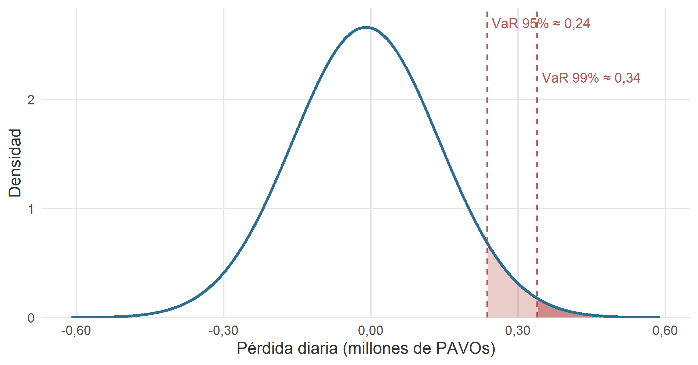
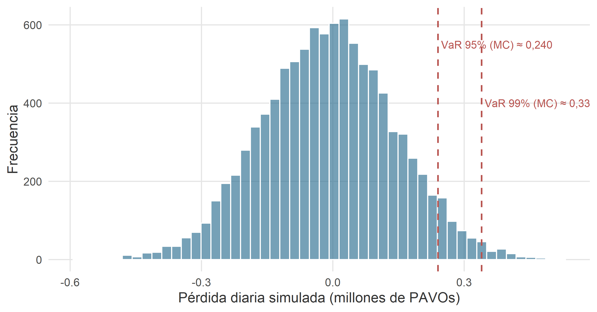

10 Modelos de probabilidad continuos

Figura 10.1. Cuando los datos se acumulan sin ponerse de acuerdo con ningún valor concreto, la campana aparece sola. No hace falta invocarla; basta con dejar de mirar demasiado cerca.
— Anotación al margen de un cuaderno de bitácora del capitán Spock Phoenicopterus, jefe de personal de navegación, encontrado durante una escala técnica en Fhloston Paradise.
10.1 Introducción
En el capítulo anterior catalogamos los modelos discretos que aparecen una y otra vez en la práctica: uniforme discreta, Bernoulli, binomial, Poisson, binomial negativa e hipergeométrica. Todos ellos comparten un rasgo común: la variable modelada solo puede tomar un conjunto —finito o numerable— de valores enteros. Cargueros que llegan a tiempo, averías al año, reactores defectuosos, empresas con flota renovada. Contamos.
Este capítulo cambia el chip. Las variables que aquí interesan son continuas: pueden tomar cualquier valor en un intervalo. No cuántas naves aterrizan, sino cuánto tarda una nave en aterrizar. No cuántos empleados hay en la plantilla, sino cuánto cobra cada uno de ellos. No cuántas averías registra una flota este año, sino cuánto tiempo pasa entre dos averías consecutivas. La aritmética cambia porque, como se vio en el capítulo 8, en una variable continua la probabilidad de un valor puntual es cero; lo que tiene sentido son las probabilidades sobre intervalos, calculadas como áreas bajo la función de densidad.
Nos concentraremos aquí en cuatro modelos, en este orden:
- La distribución uniforme continua, el modelo más sencillo posible: “todos los valores del intervalo son igualmente verosímiles”.
- La distribución exponencial, para modelar tiempos de espera entre sucesos raros. Está íntimamente ligada a la Poisson del capítulo anterior.
- La distribución normal, la reina absoluta de la estadística clásica. Si un curso de estadística empresarial pudiera reducirse a una sola distribución, sería esta.
- La distribución log-normal, una vieja conocida disfrazada: es una variable cuyo logaritmo se distribuye normalmente. Muy útil para modelar variables económicas asimétricas (ingresos, ventas, precios).
Omitiremos deliberadamente las funciones generatrices, como en el capítulo anterior.
Cómo leer este capítulo. Para cada modelo se sigue el mismo guion: primero, la intuición (qué fenómeno del mundo real produce este tipo de variable); a continuación, la definición formal con su función de densidad, media y varianza; después, uno o dos ejemplos con entidades del universo RStars; y, cuando procede, una propiedad característica del modelo. Al final del capítulo, una guía rápida de decisión responde a la pregunta operativa: “¿qué modelo continuo aplico?”.
10.2 Distribución uniforme continua
10.2.1 La intuición: todos los valores por igual
Empezamos por el modelo más simple concebible. Una variable aleatoria continua sigue una distribución uniforme en el intervalo \([a, b]\) cuando todos los valores del intervalo son igualmente verosímiles. La densidad es la misma en cualquier punto del intervalo, y cero fuera de él. Gráficamente, es un rectángulo. Matemáticamente, es lo más aburrido que puede hacer una densidad. Pedagógicamente, es un modelo excelente para empezar, porque las probabilidades se calculan como cocientes de longitudes: sin integrales sofisticadas, sin trucos.
El ejemplo canónico son las ventanas horarias de aterrizaje. La torre de control del astropuerto de Klendathu asigna a cada carguero una franja de aterrizaje de, pongamos, veinte minutos. El piloto sabe que aterrizará en algún instante de esa franja, pero, dentro de ella, no hay ningún motivo para pensar que un instante sea más probable que otro (el tráfico está regulado precisamente para que así sea). La hora exacta de aterrizaje, medida en minutos desde el comienzo de la ventana, es una variable uniforme en el intervalo \([0, 20]\).
Otros ejemplos con la misma estructura: la posición de un contenedor descargado dentro de un pasillo del almacén; el instante en el que se produce un corte de energía dentro de una hora concreta; el error de redondeo de un instrumento con precisión de un decimal (uniforme en \([-0{,}5;\, 0{,}5]\)). En todos, la clave es la ausencia de motivos para preferir unos valores a otros dentro del intervalo.
10.2.2 Definición formal
Una variable aleatoria \(\xi\) sigue una distribución uniforme continua en el intervalo \([a, b]\), con \(a < b\), si su función de densidad es constante dentro del intervalo y nula fuera de él:
\[ f(x) = \begin{cases} \dfrac{1}{\,b - a\,} & \text{si } a \leq x \leq b, \\[4pt] 0 & \text{en otro caso.} \end{cases} \]
Escribimos \(\xi \to U(a; b)\). Los dos parámetros del modelo son los extremos del intervalo: \(a\) (inferior) y \(b\) (superior). No hay más.
Que la densidad valga \(1/(b-a)\) no es un capricho: es lo que necesita valer para que el área total del rectángulo sea \(1\), esto es, para que \(f\) sea una densidad legítima. La probabilidad de que \(\xi\) caiga en un subintervalo \([c, d] \subseteq [a, b]\) es, simplemente,
\[ P(c \leq \xi \leq d) \;=\; \int_{c}^{d} \frac{1}{b - a}\, dx \;=\; \frac{d - c}{b - a}. \]
Es decir: la proporción que representa la longitud \(d - c\) sobre la longitud total \(b - a\). Cociente de longitudes; nada más.
Media y varianza:
\[ \mu = E(\xi) = \frac{a + b}{2}, \qquad \sigma^{2} = \operatorname{Var}(\xi) = \frac{(b - a)^{2}}{12}. \]
La media es el punto medio del intervalo, como cabía esperar de un modelo simétrico. La varianza crece con el cuadrado de la amplitud: cuanto más ancho el rectángulo, más disperso el resultado.
10.2.3 Ejemplo: ventana de aterrizaje en el astropuerto de Klendathu
arrakis freight tiene contratada una ventana de aterrizaje de \(20\) minutos en el astropuerto de Klendathu para cada carguero entrante. El instante exacto de tocar la plataforma, medido en minutos desde el comienzo de la ventana, es una variable
\[ \xi = \text{"minuto de aterrizaje dentro de la ventana"} \;\to\; U(0;\, 20). \]
La densidad vale \(1/20 = 0{,}05\) minutos\(^{-1}\) en todo el intervalo. La media es \(\mu = 10\) minutos (mitad de la ventana) y la desviación típica \(\sigma = 20 / \sqrt{12} \approx 5{,}77\) minutos.
Preguntas concretas:
-
Que el aterrizaje ocurra en los cinco primeros minutos.
\[ P(\xi \leq 5) = \frac{5 - 0}{20 - 0} = 0{,}25. \]
Uno de cada cuatro cargueros aterriza pronto. No es que sean puntuales: es que la definición de “pronto” es literalmente “el primer cuarto”.
-
Que se retrase más allá del minuto 15.
\[ P(\xi > 15) = \frac{20 - 15}{20} = 0{,}25. \]
La misma proporción, por simetría.
-
Que aterrice en la franja central, entre el minuto 6 y el 14.
\[ P(6 \leq \xi \leq 14) = \frac{14 - 6}{20} = 0{,}40. \]
La figura 10.1 muestra la densidad completa y sombrea la probabilidad correspondiente al intervalo central. La visualización deja claro lo que la fórmula anuncia: calcular probabilidades en una uniforme es medir rectángulos.

Figure 10.1: Función de densidad de \(\xi \to U(0;\, 20)\): instante de aterrizaje dentro de la ventana asignada a un carguero de arrakis freight en el astropuerto de Klendathu. El área sombreada corresponde a \(P(6 \leq \xi \leq 14) = 0{,}40\).
10.2.4 Cuándo (y cuándo no) es razonable la uniforme
La uniforme es un modelo tentador por su simplicidad, pero conviene no abusar de ella. En muchos problemas se aplica por comodidad —“no sé bien cómo se comporta esta variable, así que asumo que es uniforme entre estos dos valores”— cuando la realidad la contradice sin disimulo. Si a un piloto de hyperdrive express se le pregunta el minuto de aterrizaje real y sus datos históricos se apiñan en la parte final de la ventana (porque tiende a apurar), la uniforme mentirá: la densidad debería crecer hacia la derecha. La uniforme, como cualquier modelo, es una hipótesis, no una comodidad.
Un uso particularmente valioso de la uniforme es como modelo de referencia: en simulación estocástica, los generadores de números aleatorios producen precisamente valores \(U(0; 1)\), y a partir de ahí se generan realizaciones de cualquier otra distribución. Lo veremos, con código incluido, al final de este capítulo.
10.3 Distribución exponencial
10.3.1 La intuición: tiempo hasta el próximo suceso
La distribución exponencial aparece cuando se mide el tiempo que transcurre entre sucesos raros en un proceso de Poisson. Recordemos del capítulo anterior: si en la ruta Coruscant–Naboo los avistamientos de piratas siguen una Poisson de tasa \(\lambda = 2{,}3\) avistamientos por semana, ¿qué distribución sigue el tiempo entre dos avistamientos consecutivos?
La respuesta es limpia: exponencial. Concretamente, \(\mathrm{Exp}(\lambda)\) con la misma \(\lambda\) de la Poisson generadora. Poisson y exponencial son las dos caras de la misma moneda. Poisson cuenta cuántos sucesos ocurren en un intervalo fijo; exponencial mide cuánto tiempo pasa hasta que ocurre el próximo suceso. Si dominamos una, tenemos la otra prácticamente gratis.
Otros ejemplos con este mismo esqueleto: el tiempo entre averías graves de un carguero de la flota KORRIGAN; el tiempo entre entradas de nuevos clientes en la oficina de vader and company; el tiempo hasta la próxima reserva de ruta en el sistema comercial de excalibur freight systems. En todos los casos, un evento raro que puede ocurrir en cualquier instante con la misma “propensión”, y una variable —el tiempo de espera— que interesa modelar.
10.3.2 Definición formal
Una variable aleatoria \(\xi\) (típicamente, un tiempo, y por tanto \(\xi \geq 0\)) sigue una distribución exponencial de parámetro \(q > 0\) si su función de densidad es
\[ f(x) = q \cdot e^{-q x}, \qquad x \geq 0. \]
Escribimos \(\xi \to \mathrm{Exp}(q)\). El único parámetro, \(q\), se interpreta como la tasa del proceso subyacente: número de sucesos esperados por unidad de tiempo. Si \(q = 2\) averías por año, el tiempo medio hasta la siguiente avería será \(1/q = 0{,}5\) años.2
La función de distribución tiene una forma especialmente cómoda:
\[ F(x) = P(\xi \leq x) = 1 - e^{-q x}, \qquad x \geq 0, \]
de la que se derivan las probabilidades típicas sin apenas cálculo: \(P(\xi > x) = e^{-q x}\), y para un intervalo \([a, b]\), \(P(a \leq \xi \leq b) = e^{-q a} - e^{-q b}\).
Media y varianza:
\[ \mu = E(\xi) = \frac{1}{q}, \qquad \sigma^{2} = \operatorname{Var}(\xi) = \frac{1}{q^{2}}. \]
Un hecho llamativo: media y desviación típica coinciden, ambas iguales a \(1/q\). La exponencial es una distribución muy dispersa en términos relativos; su coeficiente de variación es siempre igual a \(1\).
Mediana y cuantiles. Invirtiendo la función de distribución se obtiene el cuantil de nivel \(p\):
\[ x_{p} = -\frac{\ln(1 - p)}{q}. \]
La mediana es el cuantil de nivel \(0{,}5\): \(\mathrm{Me} = \ln 2 / q \approx 0{,}693 / q\). Es sistemáticamente menor que la media \(1/q\): la exponencial es asimétrica a la derecha, y la media queda tirada por la cola larga. Esta distinción es importante en actuaría, donde la vida media de una póliza o de un contrato se suele reportar como mediana, no como media. Decir que “la vida media de este equipo es de 3 años” es sensiblemente distinto según hablemos de mediana o de esperanza.
10.3.3 La propiedad de pérdida de memoria
La exponencial tiene una propiedad matemática que la distingue de casi cualquier otro modelo de tiempo de espera, y que conviene entender bien porque tiene lecturas muy contraintuitivas. Formalmente:
\[ P(\xi > a + b \mid \xi > b) \;=\; P(\xi > a) \quad \text{para todo } a, b > 0. \]
Traducido: si un carguero lleva ya \(b\) meses sin averiarse, la probabilidad de que aguante otros \(a\) meses más sin averiarse es exactamente la misma que la que tenía al salir de fábrica de aguantar \(a\) meses. La exponencial no “recuerda” el tiempo que lleva esperando. Cada instante, en cierto sentido, es un nuevo comienzo.
Este comportamiento hace de la exponencial un modelo razonable para tiempos entre sucesos puramente aleatorios —cuando el proceso subyacente carece de mecanismos de desgaste o de acumulación—, pero un modelo inadecuado para tiempos hasta fallo de componentes que envejecen (motores, rodamientos, tuberías): en esos casos, cuanto más lleve un componente en servicio, más probable es que falle pronto, y la distribución no podrá ser exponencial. Para esos casos se emplean modelos como la Weibull, que caen fuera del alcance de este capítulo.
Un aviso sobre la pérdida de memoria. Esta propiedad se malinterpreta con frecuencia. Que una variable “no tenga memoria” no significa que los sucesos ocurran a intervalos regulares o predecibles: significa lo contrario, que la ocurrencia del próximo suceso es totalmente indiferente a lo que haya pasado antes. Un jugador de casino que apuesta al negro tras diez rojas consecutivas está cometiendo, en su fuero interno, exactamente el error opuesto: creer que la ruleta sí tiene memoria. La ruleta, como la exponencial, es olvidadiza por diseño.
10.3.4 Ejemplo: tiempo entre averías graves en la flota KORRIGAN
Del fichero astilleros_48.xlsx se desprende que las naves construidas por el astillero KORRIGAN acumulan, en conjunto, un número muy variable de averías graves a lo largo de su vida operativa. Consideremos una nave concreta, la iron sovereign, que ha sufrido varias averías a lo largo de sus \(9\) años en servicio. Supongamos —el dato es ad hoc, coherente con el registro del fichero— que las averías graves de esta nave se producen conforme a un proceso de Poisson con tasa \(q = 1{,}8\) averías por año. Entonces la variable
\[ \xi = \text{"tiempo, en años, hasta la siguiente avería grave"} \;\to\; \mathrm{Exp}(1{,}8). \]
El tiempo medio hasta el próximo incidente es \(\mu = 1 / 1{,}8 \approx 0{,}556\) años, o alrededor de \(6{,}7\) meses. La mediana es \(\mathrm{Me} = \ln 2 / 1{,}8 \approx 0{,}385\) años, o unos \(4{,}6\) meses: la mitad de las averías llegan antes de los cinco meses, aunque la media sea de casi siete. Es el efecto de la cola: unas pocas esperas largas tiran de la media hacia arriba.
Algunas probabilidades relevantes para el jefe de mantenimiento, Anakin Falco:
-
Que la próxima avería llegue en menos de seis meses (\(x = 0{,}5\) años).
\[ P(\xi \leq 0{,}5) = 1 - e^{-1{,}8 \cdot 0{,}5} \approx 0,5934. \]
Casi seis de cada diez veces, el próximo susto llega antes del medio año.
-
Que la nave aguante más de un año sin averiarse.
\[ P(\xi > 1) = e^{-1{,}8 \cdot 1} \approx 0,1653. \]
Un \(17\) % de probabilidad, aproximadamente. No es imposible, pero no es lo esperable.
-
Que la próxima avería caiga entre el tercer y el noveno mes (\(0{,}25\) y \(0{,}75\) años).
\[ P(0{,}25 \leq \xi \leq 0{,}75) = e^{-1{,}8 \cdot 0{,}25} - e^{-1{,}8 \cdot 0{,}75} \approx 0,3784. \]
La figura 10.2 muestra la densidad y la probabilidad asociada al intervalo \([0{,}25;\, 0{,}75]\). Nótese la forma inconfundible: densidad máxima en el origen y decaimiento exponencial, que es lo que da nombre al modelo.

Figure 10.2: Función de densidad de \(\xi \to \mathrm{Exp}(1{,}8)\): tiempo, en años, hasta la próxima avería grave de la nave iron sovereign (astillero KORRIGAN). El área sombreada corresponde a \(P(0{,}25 \leq \xi \leq 0{,}75)\).
Y la propiedad de pérdida de memoria, en este contexto, dice algo incómodo pero cierto: si la iron sovereign lleva ya ocho meses sin averías, la probabilidad de que aguante seis meses más es la misma que la que tenía al terminar la última revisión: alrededor del \(41\) %. La nave, en el modelo, no “sabe” cuánto tiempo lleva sin averiarse; nosotros sí lo sabemos, pero ese conocimiento no cambia el pronóstico. Anakin Falco lo tiene asumido, aunque en el fondo prefiera no pensar en ello.
10.4 Distribución normal
10.4.1 La intuición: la ubicuidad de la campana
Si un curso entero de estadística tuviera que reducirse a un único modelo probabilístico, no habría dudas: sería la distribución normal. Su función de densidad —esa campana simétrica y elegante que aparece en la portada de todos los manuales, incluido, para vergüenza propia, este— describe con notable fidelidad multitud de fenómenos aparentemente inconexos: la estatura de una población adulta, los errores de medida de un instrumento bien calibrado, los pesos de los cargamentos que salen del almacén, el rendimiento diario de un ETF diversificado, los salarios de un colectivo con estudios homogéneos. Nada de esto es casualidad: hay un teorema, el teorema central del límite, que explica —y hasta cierto punto justifica— esta ubicuidad. Lo veremos en un capítulo posterior; de momento, aceptémoslo como hecho de la vida.
Intuitivamente, la campana surge siempre que una variable aleatoria es el resultado de sumar muchos pequeños efectos independientes. El tonelaje total transportado por una flota es la suma de los tonelajes de cada nave; el peso de una remesa es la suma de los pesos de sus contenedores; el error final de una medida es la acumulación de muchos errores pequeños e independientes. En todos estos casos —y en muchísimos más— los valores centrales son más frecuentes que los extremos, y la distribución adopta la forma de campana que la normal describe con precisión.
Otras propiedades que hacen de la normal una favorita: es simétrica (media, mediana y moda coinciden), sus colas caen suave pero decididamente, está enteramente caracterizada por dos parámetros bien interpretables (la media y la desviación típica) y —quizás lo más importante en la práctica— sus probabilidades están tabuladas y se manejan con soltura.
10.4.2 Definición formal
Una variable aleatoria \(\xi\) sigue una distribución normal de media \(\mu\) y desviación típica \(\sigma > 0\) si su función de densidad es
\[ f(x) \;=\; \frac{1}{\sigma \sqrt{2 \pi}} \cdot e^{-\dfrac{(x - \mu)^{2}}{2 \sigma^{2}}}, \qquad -\infty < x < \infty. \]
Escribimos \(\xi \to N(\mu; \sigma)\).3 La campana está centrada en \(\mu\) y tiene una anchura controlada por \(\sigma\): dos tercios aproximadamente de la probabilidad caen dentro de \(\mu \pm \sigma\), un \(95\) % dentro de \(\mu \pm 2\sigma\), y prácticamente toda (\(99{,}7\) %) dentro de \(\mu \pm 3\sigma\). Es la conocida regla empírica del 68–95–99,7.
Media y varianza:
\[ \mu = E(\xi) = \mu, \qquad \sigma^{2} = \operatorname{Var}(\xi) = \sigma^{2}. \]
Es la única distribución de este manual en la que los dos parámetros del modelo son directamente la media y la varianza de la variable. Traducido: si nos dicen “\(\xi\) sigue una normal de media \(185\) y desviación típica \(10\)”, ya sabemos todo lo que hay que saber para calcular probabilidades. No hay que despejar nada.
Propiedad reproductiva (importantísima en la práctica). Si \(\xi_{1} \to N(\mu_{1}; \sigma_{1})\), \(\xi_{2} \to N(\mu_{2}; \sigma_{2})\), \(\ldots\), \(\xi_{n} \to N(\mu_{n}; \sigma_{n})\) son variables normales independientes, y \(a, b_{1}, b_{2}, \ldots, b_{n}\) son constantes reales (con no todas las \(b_j\) nulas), la combinación lineal
\[ \eta \;=\; a + b_{1} \xi_{1} + b_{2} \xi_{2} + \cdots + b_{n} \xi_{n} \]
sigue también una distribución normal, con parámetros
\[ \eta \to N\!\left( a + \sum_{j=1}^{n} b_{j} \mu_{j};\;\; \sqrt{\sum_{j=1}^{n} b_{j}^{2} \sigma_{j}^{2}} \right). \]
Se toma la nueva media aplicando la linealidad esperada y la nueva varianza como suma ponderada de varianzas (¡nunca sumar desviaciones típicas directamente!). Esta propiedad es la que hace de la normal la distribución de referencia de las medias muestrales, de las sumas de rendimientos financieros, del tonelaje total de una flota, etc.
10.4.3 La normal estándar y la tipificación
La normal tiene, en apariencia, un problema logístico: hay infinitas normales, una por cada par \((\mu, \sigma)\), y no podemos tabular una por una. La solución es elegante: se tabula una sola —la normal de media cero y desviación típica uno, llamada normal estándar o normal tipificada— y se reduce cualquier otra a ella mediante un cambio de variable.
La normal estándar \(\xi^{*} \to N(0; 1)\) tiene función de densidad
\[ \varphi(x) \;=\; \frac{1}{\sqrt{2 \pi}} \cdot e^{-x^{2}/2}, \qquad -\infty < x < \infty. \]
Sus probabilidades \(P(\xi^{*} \geq z)\) están tabuladas para valores \(z \geq 0\); usando la simetría respecto al origen se obtienen las demás.
Tipificación (o estandarización). Si \(\xi \to N(\mu; \sigma)\), la transformación
\[ \xi^{*} \;=\; \frac{\xi - \mu}{\sigma} \]
produce una variable \(\xi^{*} \to N(0; 1)\). Restar la media centra la distribución en cero; dividir por la desviación típica la escala a desviación típica uno. Todas las probabilidades sobre la normal original se traducen a probabilidades sobre la estándar aplicando la misma transformación a los extremos del intervalo.
Un truco mental para no despistarse. Al tipificar, la desigualdad se conserva: si en la variable original tenemos \(\xi < c\), en la tipificada tenemos \(\xi^{*} < (c - \mu)/\sigma\). Y al tipificar, todas las probabilidades se reducen a la pregunta única: “¿qué probabilidad hay de estar a tantas desviaciones típicas por encima (o por debajo) de la media?”.
10.4.4 Uso de la tabla: ejemplos guiados
Para consolidar la mecánica, veamos —sin necesidad de datos aún— cómo se leen las probabilidades más frecuentes en la \(N(0; 1)\). La tabla, recordemos, proporciona valores del tipo \(P(\xi^{*} \geq z)\) para \(z \geq 0\) (esto es, áreas de la cola derecha).
- \(P(\xi^{*} \geq 1{,}96) = 0{,}025\). Lectura directa.
- \(P(\xi^{*} \leq 1{,}96) = 1 - P(\xi^{*} \geq 1{,}96) = 1 - 0{,}025 = 0{,}975\). Complementario.
- \(P(\xi^{*} \leq -1{,}96) = P(\xi^{*} \geq 1{,}96) = 0{,}025\). Por simetría.
- \(P(\xi^{*} \geq -1{,}96) = 1 - P(\xi^{*} \geq 1{,}96) = 0{,}975\). Complementario del anterior.
- \(P(-1{,}96 \leq \xi^{*} \leq 1{,}96) = 1 - 2 \cdot 0{,}025 = 0{,}950\). El famoso \(95\) % central.
- \(P(1{,}64 \leq \xi^{*} \leq 1{,}96) = P(\xi^{*} \geq 1{,}64) - P(\xi^{*} \geq 1{,}96) = 0{,}0505 - 0{,}025 = 0{,}0255\).
- \(P(-1{,}64 \leq \xi^{*} \leq 1{,}96) = 1 - 0{,}0505 - 0{,}025 = 0{,}9245\).
La figura 10.3 ilustra los tres cálculos más habituales sobre la campana estándar.
![Función de densidad de la normal estándar $\xi^{*} \to N(0; 1)$ con tres áreas de referencia: cola derecha en $z = 1{,}96$, intervalo central $[-1{,}96;\, 1{,}96]$ y cola izquierda en $z = -1{,}96$. Los tres cálculos se basan en la misma tabla de una sola cola, usando complementarios y simetría.](EstadisticaEmpresarial_files/figure-html/fig-normal-estandar-1.png)
Figure 10.3: Función de densidad de la normal estándar \(\xi^{*} \to N(0; 1)\) con tres áreas de referencia: cola derecha en \(z = 1{,}96\), intervalo central \([-1{,}96;\, 1{,}96]\) y cola izquierda en \(z = -1{,}96\). Los tres cálculos se basan en la misma tabla de una sola cola, usando complementarios y simetría.
10.4.5 Ejemplo 1: rendimiento energético de las naves KORRIGAN
Del fichero astilleros_48.xlsx, el Índice de Rendimiento Energético (IRE) de las naves del astillero KORRIGAN presenta una distribución que puede modelarse razonablemente como normal, con media \(\mu = 76{,}0\) y desviación típica \(\sigma = 8{,}2\) (toneladas por unidad de especia, en la ruta de referencia Sol–Centauri B).4 Sea
\[ \xi = \text{"IRE de una nave KORRIGAN elegida al azar"} \;\to\; N(76{,}0;\, 8{,}2). \]
Preguntas concretas del ingeniero de mantenimiento:
-
¿Qué probabilidad hay de que una nave KORRIGAN tomada al azar tenga un IRE inferior a \(70\)?
Tipificamos: \(z = (70 - 76{,}0) / 8{,}2 \approx -0{,}73\). Buscamos \(P(\xi < 70) = P(\xi^{*} < -0{,}73) = P(\xi^{*} > 0{,}73) \approx 0,2327\).
Alrededor de un \(23\) % de las naves están por debajo de ese umbral.
-
¿Qué probabilidad hay de que el IRE de una nave supere el \(85\)?
\(z = (85 - 76{,}0) / 8{,}2 \approx 1{,}10\). Por tabla, \(P(\xi^{*} > 1{,}10) \approx 0,1357\).
Aproximadamente un \(14\) % de las naves están en la franja de alto rendimiento.
-
¿Entre qué valores se concentra el 90 % central de los IRE?
Buscamos \(L\) y \(U\) tales que \(P(L \leq \xi \leq U) = 0{,}90\), con la distribución centrada: \(L = \mu - 1{,}645 \sigma\) y \(U = \mu + 1{,}645 \sigma\).
\(L \approx 76{,}0 - 1{,}645 \cdot 8{,}2 \approx 62,51\), y \(U \approx 76{,}0 + 1{,}645 \cdot 8{,}2 \approx 89,49\).
Es decir, un \(90\) % de las naves tiene un IRE entre \(62{,}5\) y \(89{,}5\) aproximadamente.
La figura 10.4 muestra la campana con los tres puntos de referencia. El resto es geometría.

Figure 10.4: Función de densidad de \(\xi \to N(76{,}0;\, 8{,}2)\): IRE de una nave KORRIGAN elegida al azar. La franja sombreada corresponde al 90 % central; las áreas oscuras a las colas por debajo de 70 y por encima de 85.
10.4.6 Ejemplo 2: tonelaje total de una flota (propiedad reproductiva)
Aquí conviene explotar la propiedad reproductiva de la normal, que es la que la hace realmente útil en la práctica. Supongamos que arrakis freight prepara una flotilla de seis cargueros para una operación conjunta a Klendathu. El tonelaje individual de cada carguero puede modelarse como
\[ \xi_{j} \to N(734{,}6;\, 114{,}5) \quad \text{(miles de toneladas)}, \quad j = 1, 2, \ldots, 6, \]
con los seis tonelajes independientes entre sí.5 Interesa la variable
\[ \eta = \xi_{1} + \xi_{2} + \cdots + \xi_{6} \;=\; \text{"tonelaje total de la flotilla"}. \]
Por la propiedad reproductiva, \(\eta\) sigue también una distribución normal:
\[ \eta \to N\!\left( 6 \cdot 734{,}6;\; \sqrt{6 \cdot 114{,}5^{2}} \right) \;=\; N(4\,407{,}6;\, 280{,}5). \]
Nótese que la media se multiplica por seis, pero la desviación típica solo por \(\sqrt{6} \approx 2{,}45\): la agregación reduce el peso relativo de la incertidumbre, que es la razón matemática de por qué diversificar reduce el riesgo. El coeficiente de variación pasa de \(\sigma / \mu \approx 15{,}6\) % en una nave individual a \(\approx 6{,}4\) % en la flotilla completa.
Pregunta operativa: ¿qué probabilidad hay de que el tonelaje total supere las \(4\,700\) miles de toneladas?
Tipificamos: \(z = (4\,700 - 4\,407{,}6) / 280{,}5 \approx 1{,}04\). Por tabla, \(P(\eta > 4\,700) \approx 0,1492\), en torno al \(15\) % de las expediciones.
10.4.7 Cuantiles y aplicación financiera: el Valor en Riesgo (VaR)
Hasta ahora hemos hecho siempre la misma pregunta: fijado un valor, ¿qué probabilidad hay de que la variable lo supere? En muchas aplicaciones económicas se hace la pregunta inversa: fijada una probabilidad, ¿qué valor la asegura? Esa pregunta lleva al concepto de cuantil.
El cuantil de nivel \(\alpha\) de una variable aleatoria \(\xi\), denotado \(z_{\alpha}\), es el valor tal que \(P(\xi \leq z_{\alpha}) = \alpha\). Para la normal, los cuantiles se pueden leer directamente de la tabla o calcular con software: \(z_{0{,}95} \approx 1{,}645\), \(z_{0{,}975} \approx 1{,}96\), \(z_{0{,}99} \approx 2{,}326\), \(z_{0{,}995} \approx 2{,}576\) (todos referidos a la \(N(0; 1)\); para otras normales, se desestandariza).
Sobre esta idea de cuantil descansa una de las herramientas más utilizadas de las finanzas modernas: el Valor en Riesgo (Value at Risk, VaR). El VaR es, sencillamente, un cuantil de la distribución de pérdidas de una cartera. Cuando un banco dice “el VaR diario al \(95\) % de esta cartera es \(2\) millones de PAVOs”, está diciendo:
Con probabilidad \(0{,}95\), las pérdidas de un día no superarán los \(2\) millones; equivalentemente, solo en el \(5\) % de los días peores esperamos perder más de esa cifra.
El VaR es el estándar regulatorio para cuantificar el riesgo de mercado (acuerdos de Basilea en banca, Solvencia II en seguros). Y su cálculo, en su versión más simple —el llamado VaR paramétrico normal— es una aplicación directa de lo que hemos visto.
Un ejemplo. El fondo “Andrómeda-Vía Láctea” de hyperdrive express invierte en un índice de rentabilidades diarias que se puede modelar como \(\xi \to N(0{,}10\,\%;\, 1{,}50\,\%)\) (media y desviación típica en porcentaje diario). El gestor dispone de un capital de \(C = 10\) millones de PAVOs y quiere calcular el VaR al \(95\) % y al \(99\) %.
Paso 1: cuantil de la pérdida. La pérdida diaria es \(L = -C \cdot \xi\). Como \(\xi \sim N\), la pérdida es también normal: \(L \to N(-0{,}10\,\% \cdot 10, \; 1{,}50\,\% \cdot 10) = N(-0{,}01;\, 0{,}15)\) millones. El VaR es el cuantil superior de \(L\):
\[ \mathrm{VaR}_{0{,}95} = \mu_{L} + z_{0{,}95} \cdot \sigma_{L}, \qquad z_{0{,}95} = 1{,}645. \]
Paso 2: cálculo.
- VaR al 95 %: \(\mathrm{VaR}_{0{,}95} = -0{,}01 + 1{,}645 \cdot 0{,}15 \approx 0,237\) millones de PAVOs. En días normales, no se espera perder más de unos \(237\) mil PAVOs.
- VaR al 99 %: \(\mathrm{VaR}_{0{,}99} = -0{,}01 + 2{,}326 \cdot 0{,}15 \approx 0,339\) millones. Ampliando el nivel de confianza, la reserva prudencial sube a \(339\) mil PAVOs.
La figura 10.5 visualiza el concepto sobre la distribución de pérdidas. El VaR es el punto que deja a su derecha la probabilidad \(1 - \alpha\): el umbral que separa los días “normales” de los días “malos”.

Figure 10.5: Distribución de pérdidas diarias de una cartera modelada como normal \(L \to N(-0{,}01;\, 0{,}15)\) (millones de PAVOs). El VaR al 95 % (\(\approx 237\) mil PAVOs) y al 99 % (\(\approx 339\) mil PAVOs) son los cuantiles de nivel \(0{,}95\) y \(0{,}99\) de esta distribución: los umbrales que las pérdidas no superan salvo, respectivamente, en el 5 % y el 1 % de los días.
Un aviso sobre el VaR. El VaR paramétrico normal es cómodo y muy usado, pero descansa sobre una hipótesis crítica: que las rentabilidades sean normales. Las rentabilidades reales de los activos financieros suelen tener colas más gruesas que la normal, y también asimetría. Cuando ocurre un “cisne negro” —una caída de mercado extrema como la de octubre de 2008—, el VaR calculado con la normal subestima gravemente el riesgo. Por eso los reguladores exigen, además, complementarlo con medidas como el Expected Shortfall (o CVaR): la pérdida media condicionada a que se supere el VaR. La normal es una primera aproximación, no la última palabra.
10.4.8 La normal como aproximación: cierre del círculo
En el capítulo 9 vimos que la binomial se aproximaba a la Poisson bajo ciertas condiciones. Aquí cerramos el otro extremo: la normal aproxima muy bien tanto a la binomial como a la Poisson cuando los parámetros son suficientemente grandes. Los criterios usuales son:
- Binomial → Normal (De Moivre–Laplace). Si \(\xi \to B(n; p)\) con \(n\) grande y \(p\) no demasiado próximo a \(0\) ni a \(1\) —criterio práctico: \(n p \geq 5\) y \(n q \geq 5\)—, entonces \(\xi \approx N(n p;\, \sqrt{n p q})\).
- Poisson → Normal. Si \(\xi \to \mathrm{Po}(\lambda)\) con \(\lambda \geq 10\) (algunos textos exigen \(\lambda \geq 5\)), entonces \(\xi \approx N(\lambda;\, \sqrt{\lambda})\).
Ambas aproximaciones se justifican por el mismo teorema central del límite. La binomial es una suma de \(n\) Bernoullis independientes, y para \(n\) grande esa suma tiende a ser normal. La Poisson es un límite de binomiales, con lo que hereda la aproximación por transitividad. La figura 10.6 ilustra la calidad de la aproximación en un caso concreto: una binomial \(B(50;\, 0{,}4)\) (barras) frente a la \(N(20;\, \sqrt{12})\) correspondiente (curva). El ajuste es prácticamente perfecto salvo en las colas más extremas.

Figure 10.6: Comparación entre las probabilidades exactas de una binomial \(B(50;\, 0{,}4)\) (barras) y su aproximación normal \(N(20;\, \sqrt{12})\) (curva). Con \(n p = 20\) y \(n q = 30\) ambos claramente por encima de 5, la aproximación es muy buena en toda la masa de la distribución.
Corrección por continuidad. Al aproximar una variable discreta por una continua se pierde inevitablemente un poco de precisión al identificar qué punto de la continua corresponde a qué valor entero de la discreta. Una técnica sencilla y muy eficaz para reducir ese error es la corrección por continuidad: al calcular \(P(\xi \leq k)\) con la aproximación normal, se sustituye por \(P(Y \leq k + 0{,}5)\), donde \(Y\) es la normal aproximante; análogamente \(P(\xi \geq k) \approx P(Y \geq k - 0{,}5)\). La intuición es que el valor discreto \(k\) “ocupa” un rectángulo de anchura \(1\) centrado en \(k\), así que hay que capturar sus extremos.
Con nuestro ejemplo \(B(50;\, 0{,}4)\): la probabilidad exacta \(P(\xi \leq 20) \approx 0,5610\). La aproximación sin corrección da \(P(Y \leq 20) \approx 0,5000\); con corrección, \(P(Y \leq 20{,}5) \approx 0,5574\). La corrección afila la aproximación en varias décimas.
En términos operativos: cuando aparezca una binomial con \(n\) enorme (miles) o una Poisson con \(\lambda\) grande (decenas), no calcule sumas monstruosas con \(n\) términos. Aproxime por normal —con corrección por continuidad si busca precisión— y termine el problema tipificando.
10.5 Un vistazo a la distribución log-normal
10.5.1 La intuición: cuando el logaritmo es normal
Muchas variables de interés en ADE —ingresos empresariales, ventas anuales, precios de activos financieros, tamaños de patrimonios, salarios— comparten un rasgo característico: son estrictamente positivas y fuertemente asimétricas a la derecha. Hay muchas empresas pequeñas y unas pocas gigantes; muchos empleados con salarios modestos y unos pocos altísimos. La normal no puede modelar esto: es simétrica y admite valores negativos.
La distribución log-normal es el modelo natural en estos casos. Una variable \(\xi > 0\) sigue una log-normal si su logaritmo sigue una normal:
\[ \ln \xi \to N(\mu;\, \sigma) \;\iff\; \xi \to \mathrm{LN}(\mu;\, \sigma). \]
Los parámetros \(\mu\) y \(\sigma\) son, respectivamente, la media y la desviación típica del logaritmo de la variable, no de la variable misma. Esta distinción confunde al principio: la log-normal es siempre asimétrica a la derecha, con una cola larga que se extiende hacia valores grandes. Su media (ya no \(\mu\), sino \(E(\xi) = e^{\mu + \sigma^{2}/2}\)) es mayor que su mediana, y ambas son mayores que su moda. Cualquiera que haya visto un histograma de ingresos empresariales o salariales reconoce inmediatamente la forma.
Función de densidad:
\[ f(x) \;=\; \frac{1}{x \sigma \sqrt{2\pi}} \cdot e^{-\dfrac{(\ln x - \mu)^{2}}{2 \sigma^{2}}}, \qquad x > 0. \]
Media y varianza:
\[ E(\xi) = e^{\mu + \sigma^{2}/2}, \qquad \operatorname{Var}(\xi) = \left( e^{\sigma^{2}} - 1 \right) \cdot e^{2\mu + \sigma^{2}}. \]
La lectura operativa de por qué la log-normal es tan frecuente en economía la propuso el ingeniero estadounidense Robert Gibrat en los años treinta: si el crecimiento de una empresa (o de un salario, o de un patrimonio) en cada periodo es un porcentaje aleatorio con esperanza pequeña y varianza moderada, el logaritmo del valor final es la suma acumulada de esos porcentajes; por el teorema central del límite, la suma se aproxima a una normal, y el valor final —la exponencial de esa normal— es log-normal. Los procesos multiplicativos, en el largo plazo, producen log-normales del mismo modo que los aditivos producen normales.
La log-normal en finanzas: el modelo de Black-Scholes. El modelo probabilístico más famoso de la historia de las finanzas —el que valió el Nobel de Economía a Merton y Scholes en 1997— asume que el precio de una acción sigue un proceso cuyos incrementos porcentuales son normales, es decir, que el precio en el instante \(t\) sigue una distribución log-normal. Toda la valoración clásica de opciones financieras (calls, puts, derivados en general) descansa sobre esa hipótesis. Que un modelo introductorio como este permita entender —al menos en su esqueleto— la matemática detrás de un premio Nobel no es cosa menor.
10.5.2 Ejemplo: costes operativos de las empresas interestelares
El fichero interestelar_300.xlsx recoge los costes operativos (variable COSTOP, en miles de PAVOs) de las 300 empresas del sector. La distribución empírica es marcadamente asimétrica: la mediana ronda los \(31\) miles de PAVOs, la media supera los \(97\), y hay compañías con costes superiores a \(1\,000\). Una normal ajustada a estos datos daría, entre otras barbaridades, probabilidades no despreciables de costes negativos, lo cual sería —conceptualmente hablando— un buen problema económico si fuera cierto.
Los costes operativos son un candidato de manual para la log-normal: son el producto de muchos factores multiplicativos (escala de la operación, precios de los insumos, complejidad logística, antigüedad de la flota, número de rutas gestionadas…). Cuando muchos factores multiplicativos entran en juego, el logaritmo se comporta como una suma de efectos y —por el teorema central del límite— tiende a la normal. Del resultado se sigue la log-normal.
Ajustando el modelo: se toma el logaritmo natural de los costes, se estima su media y su desviación típica, y esos son los parámetros.
Los parámetros estimados son \(\mu \approx 3,632\) y \(\sigma \approx 1,417\) (ambos referidos al logaritmo de los costes). Bajo el modelo log-normal:
- La mediana teórica de costes operativos es \(e^{\mu} \approx 37,8\) miles de PAVOs.
- La media es \(e^{\mu + \sigma^{2}/2} \approx 103,2\) miles de PAVOs, muy por encima de la mediana. Así son las distribuciones asimétricas: la media queda “tirada” hacia la derecha por las empresas de gran tamaño.
- \(P(\xi < 10) \approx 0,1740\): alrededor de un \(17,4\) % de las empresas son micro-operadores con costes muy bajos.
- \(P(10 \leq \xi \leq 100) \approx 0,5798\): en torno al \(58,0\) % son operadores de tamaño medio, que constituyen el grueso del sector.
- \(P(\xi > 200) \approx 0,1199\): alrededor de un \(12,0\) % son grandes compañías con costes elevados.
La figura ?? contrasta el histograma empírico de los costes operativos con el ajuste log-normal (curva). El acuerdo es prácticamente perfecto en toda la extensión de la distribución: modelo y datos difieren en menos de un punto porcentual para cualquier umbral razonable. Una normal sobre estos mismos datos daría, en cambio, un ajuste catastrófico.

Figura 10.2. Distribución de los costes operativos (COSTOP, miles de PAVOs) de las 300 empresas del fichero interestelar_300.xlsx con el ajuste log-normal superpuesto. El acuerdo es prácticamente perfecto: la log-normal reproduce con precisión la asimetría y el decaimiento de la cola derecha.
Para hacer visible la calidad del ajuste desde otro ángulo, la tabla ?? compara, para varios umbrales, la proporción real de empresas por debajo del umbral (calculada directamente sobre los datos) con la probabilidad que asigna el modelo log-normal. Las diferencias son inferiores a un punto porcentual en todos los casos.
| Umbral (miles PAVOs) | \(P(\xi \leq u)\) empírica | \(P(\xi \leq u)\) modelo log-normal | Diferencia |
|---|---|---|---|
| 5 | 0.0700 | 0.0767 | +0.0067 |
| 10 | 0.1700 | 0.1740 | +0.0040 |
| 20 | 0.3233 | 0.3266 | +0.0033 |
| 50 | 0.5800 | 0.5782 | -0.0018 |
| 100 | 0.7433 | 0.7538 | +0.0105 |
| 200 | 0.8733 | 0.8801 | +0.0068 |
Log-normal y desigualdad. No es casualidad que las distribuciones de renta y riqueza sean aproximadamente log-normales, aunque con una cola aún más gruesa en el extremo superior —los muy ricos— que la log-normal no captura del todo. Para ese extremo se emplean las distribuciones de Pareto (o leyes de potencia), en las que la densidad decae como \(x^{-\alpha}\) y los valores extremos son mucho más frecuentes que en cualquier distribución con cola exponencial. La regla informal “el \(80\) % de la riqueza está en manos del \(20\) % de la población” (el famoso principio de Pareto) es una manifestación de este patrón. El mecanismo multiplicativo que produce la log-normal —cada año, un porcentaje aleatorio de crecimiento— es también el mecanismo económico que produce desigualdad: pequeñas ventajas iniciales, compuestas durante décadas, generan brechas enormes. La log-normal es el retrato estadístico de esa asimetría acumulativa.
10.6 Simulación de modelos continuos con R
Todas las distribuciones vistas en este capítulo están implementadas en R con las cuatro funciones estándar d*, p*, q* y r* (densidad, distribución acumulada, cuantiles y simulación). La tabla ?? resume las llamadas para los cuatro modelos.
| Modelo | Función R | Ejemplo |
|---|---|---|
| Uniforme |
runif(n, min, max)
|
runif(1000, 0, 20)
|
| Exponencial |
rexp(n, rate)
|
rexp(1000, 1.8)
|
| Normal |
rnorm(n, mean, sd)
|
rnorm(1000, 76, 8.2)
|
| Log-normal |
rlnorm(n, meanlog, sdlog)
|
rlnorm(1000, 3.4, 1.2)
|
Tabla 10.1. Funciones de R para simular los modelos continuos del capítulo. Cambiando la letra r inicial por d, p o q se accede, respectivamente, a la densidad, la función de distribución acumulada y los cuantiles.
Como aplicación práctica, retomemos el ejemplo del VaR de la sección anterior. Al gestor del fondo “Andrómeda-Vía Láctea” le interesa estimar el VaR sin depender de la fórmula analítica, para prepararse ante el día en que el modelo normal no sea válido (colas gruesas, asimetría) y ya no sirva la fórmula cerrada. La técnica moderna para hacerlo es la simulación de Monte Carlo: se simulan miles de rentabilidades diarias del modelo elegido y se estima el VaR como el cuantil empírico correspondiente. En pocas líneas:
set.seed(10)
n_sim <- 10000
mu_r <- 0.0010; sd_r <- 0.0150 # rentabilidad diaria (proporción)
capital <- 10 # millones de PAVOs
# Simulamos rentabilidades y calculamos las pérdidas
rent_sim <- rnorm(n_sim, mu_r, sd_r)
perdidas <- -capital * rent_sim
# VaR estimado como cuantil empírico
var95_mc <- quantile(perdidas, 0.95)
var99_mc <- quantile(perdidas, 0.99)
ggplot(tibble(L = perdidas), aes(x = L)) +
geom_histogram(bins = 50, fill = pal_apoyo, alpha = 0.65, color = "white") +
geom_vline(xintercept = c(var95_mc, var99_mc),
color = pal_acento, linetype = "dashed", linewidth = 0.6) +
annotate("text", x = var95_mc, y = 550,
label = paste0("VaR 95% (MC) ≈ ", fmt(var95_mc, 3)),
color = pal_acento, size = 3, hjust = -0.03) +
annotate("text", x = var99_mc, y = 400,
label = paste0("VaR 99% (MC) ≈ ", fmt(var99_mc, 3)),
color = pal_acento, size = 3, hjust = -0.03) +
labs(x = "Pérdida diaria simulada (millones de PAVOs)", y = "Frecuencia") +
theme_libro()
Figura 10.3. Distribución simulada de pérdidas diarias de la cartera (10.000 simulaciones bajo el modelo normal). Las líneas verticales rojas marcan los VaR al 95 % y al 99 % estimados como cuantiles empíricos. El resultado coincide, salvo la variabilidad Monte Carlo, con el cálculo analítico de la sección anterior.
Los VaR estimados por simulación coinciden, salvo la propia variabilidad de la muestra, con los que obtuvimos analíticamente. La ventaja del enfoque simulado es que funciona con cualquier distribución, incluso cuando no existe fórmula cerrada. Basta cambiar rnorm por, por ejemplo, rt (t de Student, con colas más gruesas) o por una mezcla de distribuciones para modelar rentabilidades más realistas. Es la manera en que los sistemas de gestión de riesgos de la banca contemporánea calculan sus VaR y sus Expected Shortfall día tras día.
10.7 Guía rápida de decisión
Con cuatro modelos continuos sobre la mesa, la pregunta operativa vuelve a ser: “¿qué modelo aplico?”. La tabla ?? resume el criterio.
| Situación | Modelo | Ejemplo |
|---|---|---|
| Todos los valores del intervalo son igualmente verosímiles. | Uniforme, \(U(a; b)\). | Minuto de aterrizaje dentro de una ventana de 20 minutos. |
| Tiempo hasta el próximo suceso raro (proceso de Poisson). | Exponencial, \(\mathrm{Exp}(q)\). | Años hasta la próxima avería grave de una nave KORRIGAN. |
| Variable resultado de sumar muchos efectos pequeños e independientes. | Normal, \(N(\mu; \sigma)\). | IRE de una nave; tonelaje total de una flotilla; rentabilidad diaria. |
| Variable estrictamente positiva y muy asimétrica a la derecha, generada por un proceso multiplicativo. | Log-normal, \(\mathrm{LN}(\mu; \sigma)\). | Costes operativos; salarios; precios de activos. |
Tabla 10.2
Y las relaciones-puente que conviene tener en la cabeza al terminar este capítulo:
- Poisson \(\leftrightarrow\) Exponencial son la misma moneda vista por sus dos caras: la Poisson cuenta sucesos en un intervalo fijo, la exponencial mide tiempos entre sucesos consecutivos. La tasa \(q\) es la \(\lambda\) del proceso Poisson subyacente.
- Binomial \(\to\) Normal (De Moivre–Laplace) cuando \(n p \geq 5\) y \(n q \geq 5\), con opcional corrección por continuidad.
- Poisson \(\to\) Normal cuando \(\lambda \geq 10\) (algunos manuales aceptan \(\lambda \geq 5\)).
- Normal \(\to\) Log-normal por transformación exponencial: si \(Y = \ln \xi\) es normal, entonces \(\xi\) es log-normal. La relación es funcional, no una aproximación.
Estas conexiones no son mnemotécnicas caprichosas: reflejan que todos los modelos, discretos y continuos, forman una familia entrelazada por el teorema central del límite. En el largo plazo y con muestras grandes, la normal aparece por todas partes.
10.8 Recapitulación
Este capítulo ha catalogado cuatro modelos continuos y las relaciones que los enlazan. Las cuatro ideas que conviene retener por encima de las demás son:
Cada modelo describe una intuición del mundo real. La uniforme, la ausencia de preferencia dentro de un intervalo. La exponencial, tiempos de espera memoryless. La normal, la suma de muchos efectos independientes. La log-normal, el producto de muchos efectos independientes. Identificar bien la intuición es identificar bien el modelo.
La normal es la reina, pero no es universal. Su ubicuidad está justificada por el teorema central del límite, pero no todo es normal: variables acotadas, tiempos de espera, magnitudes multiplicativas y fenómenos con colas gruesas necesitan otros modelos. Aplicar la normal por defecto es un error frecuente y evitable.
Las probabilidades se calculan tipificando. Casi cualquier problema con una normal —y muchos con otras distribuciones que se aproximan por normal— se reduce a preguntas del tipo “¿a cuántas desviaciones típicas de la media está este valor?”. Interiorizar esta pregunta, y su respuesta vía tabla, es interiorizar la mitad del temario de inferencia que viene después.
Los cuantiles son la puerta a las aplicaciones económicas. El VaR de la gestión de riesgos financieros, las primas actuariales, los límites de garantía industrial, los intervalos de confianza que veremos en el próximo bloque… todos son cuantiles de alguna distribución. Aprender a leer la tabla en los dos sentidos —dada la probabilidad, buscar el valor, y viceversa— duplica de golpe la capacidad operativa del estudiante.
En el próximo capítulo daremos el salto conceptual más importante del curso: pasaremos de describir distribuciones a inferir sus parámetros a partir de muestras. Ahí aparecerá con todo su esplendor el teorema central del límite, que hemos ido invocando desde las sombras, y quedará claro por qué la normal —aún sin aparecer explícitamente en los datos originales— acaba gobernando el comportamiento de las medias muestrales. Aparecerán también, y ya no como añadido sino como protagonistas de pleno derecho, algunas distribuciones nuevas: la t de Student, la ji-cuadrado y la F de Snedecor, todas ellas derivadas de la normal y todas ellas indispensables para inferir con muestras finitas. La estadística inferencial, esa cosa que da miedo por su nombre pero se sostiene sobre las distribuciones que ya conocemos, está a un capítulo de distancia.
10.9 Problemas propuestos.
Este capítulo, como el anterior, tiene un doble objetivo pedagógico: identificar el modelo continuo correcto para cada situación y aplicar con soltura las fórmulas de cada modelo. Los 20 ejercicios que siguen se organizan en dos grandes bloques: los primeros —muy variados y a menudo puramente interpretativos— entrenan la identificación; los siguientes se ocupan del cálculo dentro de cada modelo, las tipificaciones, los cuantiles inversos, las aproximaciones y las aplicaciones económicas —incluido el VaR—. Todas las soluciones detalladas se recogen al final del capítulo.
10.9.1 Problema 10.1. Test de identificación del modelo continuo (interpretativo).
Para cada uno de los ocho escenarios siguientes, indica qué modelo probabilístico continuo de este capítulo (uniforme, exponencial, normal o log-normal) es el más apropiado, y justifica brevemente por qué:
- La ARTI asigna al azar una ventana de aterrizaje de 30 minutos a cada carguero. Sea $= $ “minuto exacto de aterrizaje dentro de la ventana”.
- El tiempo entre dos averías graves consecutivas en una nave KORRIGAN, sabiendo que las averías ocurren según un proceso de Poisson con tasa 1,2 al año. Sea $= $ “años hasta la próxima avería”.
- El Índice de Rendimiento Energético (IRE) de una nave del astillero SELENE. Es el resultado de sumar muchos factores técnicos independientes.
- Los ingresos anuales de las 300 compañías RStars. La distribución empírica muestra muchas empresas medianas, pocas muy grandes y una cola larga a la derecha.
- Los rendimientos diarios de un ETF muy diversificado del mercado interestelar.
- El instante concreto en el que se produce un corte de suministro eléctrico dentro de una hora fija de máximo consumo.
- El tiempo hasta que llega el próximo cliente a una ventanilla del Consorcio Financiero de Coruscant, sabiendo que llegan a razón media de 6 clientes por hora.
- El precio de cotización de una acción del Grupo Vader-Palpatine dentro de un año, sabiendo que evoluciona multiplicando por un factor aleatorio cada día.
10.9.2 Problema 10.2. Uniforme continua: ventana de aterrizaje.
La torre de control del astropuerto de Klendathu asigna a cada carguero una ventana de aterrizaje de 30 minutos. El instante exacto de tocar la plataforma, medido en minutos desde el comienzo de la ventana, se puede modelar como una variable aleatoria \(\xi \to U(0;\ 30)\).
Se pide:
- Escribe la función de densidad \(f(x)\) de \(\xi\).
- Calcula \(E(\xi)\) y \(\mathrm{Var}(\xi)\) aplicando las fórmulas del modelo uniforme continuo.
- Calcula \(P(\xi < 10)\): probabilidad de aterrizar en el primer tercio de la ventana.
- Calcula \(P(20 \le \xi \le 25)\): probabilidad de aterrizar entre los minutos 20 y 25.
- Calcula \(P(\xi > 27)\): probabilidad de apurar la ventana hasta los últimos tres minutos.
- Un jefe de operaciones te pide un titular breve para el informe de la semana. Interpreta los resultados.
10.9.3 Problema 10.3. Uniforme continua: cuándo aplicarla y cuándo no.
Para cada uno de los siguientes escenarios, indica si el modelo uniforme continuo es una hipótesis razonable o si sería una simplificación indebida. Justifica:
- El instante en que un rayo cae dentro de una hora concreta durante una tormenta ionizante en el corredor Klendathu.
- El precio de cierre diario de una acción muy volátil en el mercado galáctico.
- El error de redondeo introducido por un instrumento de medida al octavo decimal.
- El tiempo que tarda un cliente concreto en salir de una tienda tras entrar, del que se sabe que la mayoría permanece unos pocos minutos y solo unos pocos se quedan más de media hora.
- El identificador de una empresa elegida al azar (por sorteo puro) entre las 300 del fichero interestelar.
10.9.4 Problema 10.4. Exponencial: cálculo directo.
En una nave KORRIGAN concreta, las averías graves se producen conforme a un proceso de Poisson con tasa \(q = 1{,}2\) averías por año. Sea $= $ “tiempo, en años, hasta la próxima avería grave”.
Se pide:
- Identifica la distribución de \(\xi\) y sus parámetros.
- Calcula \(E(\xi)\) y \(\mathrm{Var}(\xi)\). Expresa la media también en meses.
- Calcula la mediana de \(\xi\) y compárala con la media.
- Calcula \(P(\xi < 0{,}5)\): probabilidad de que la próxima avería llegue en menos de seis meses.
- Calcula \(P(\xi > 1)\): probabilidad de aguantar más de un año sin averías.
- Calcula \(P(0{,}5 \le \xi \le 1)\): probabilidad de que la próxima avería caiga entre el sexto y el duodécimo mes.
10.9.5 Problema 10.5. Exponencial: la propiedad de pérdida de memoria.
Sigue el escenario del problema anterior (nave KORRIGAN, \(q = 1{,}2\) averías/año). Han transcurrido ya 8 meses desde la última avería y la nave sigue operativa sin incidencias.
Se pide:
- Calcula la probabilidad de que la nave aguante 6 meses más sin averías, condicional a que ya lleva 8 sin ellas: \(P(\xi > 8+6\ \text{meses} \mid \xi > 8\ \text{meses})\).
- Compara este valor con la probabilidad incondicional \(P(\xi > 6\ \text{meses}) = P(\xi > 0{,}5\ \text{años})\). ¿Coinciden? Justifica.
- Un ingeniero afirma: “si la nave lleva ya 8 meses sin averiarse, es porque está funcionando bien, así que ahora fallará con menor probabilidad”. ¿Es válida esta lectura bajo el modelo exponencial? Explica el error conceptual.
- Otro ingeniero afirma: “si lleva 8 meses sin averiarse, seguro que la avería está a la vuelta de la esquina, porque ya toca”. ¿Es válida esta otra lectura? Explica el otro error clásico.
- ¿Bajo qué condiciones físicas es razonable que el tiempo hasta el próximo fallo sea exponencial? ¿Y cuándo no lo es?
10.9.6 Problema 10.6. El puente Poisson-Exponencial.
Consideremos el mismo proceso de averías graves de la nave KORRIGAN, con tasa \(q = 1{,}2\) averías por año. Podemos mirarlo de dos formas alternativas: como un conteo de averías en un intervalo fijo (Poisson) o como un tiempo de espera entre averías consecutivas (exponencial).
Se pide:
- Sea $N = $ “número de averías graves en el próximo año”. Identifica la distribución de \(N\).
- Calcula \(P(N = 0)\) usando la Poisson.
- Sea $= $ “tiempo hasta la próxima avería”. Identifica la distribución de \(\xi\) (ya lo hiciste en el problema 10.4).
- Calcula \(P(\xi > 1\ \text{año})\) usando la exponencial.
- ¿Qué relación observas entre los apartados (b) y (d)? Explica por qué necesariamente deben coincidir, en términos del proceso subyacente.
- Con la misma tasa \(q = 1{,}2\), calcula la probabilidad de tener exactamente 2 averías en el próximo año (Poisson) y contrasta con: “el tiempo hasta la segunda avería”. ¿Qué distribución sigue este último? (No hace falta calcularla, solo identificarla como un caso general).
10.9.7 Problema 10.7. Cuando la exponencial NO vale.
Para cada uno de los siguientes escenarios, indica si el modelo exponencial es una hipótesis razonable para modelar el “tiempo hasta el próximo fallo” o si sería un error usarla. Justifica en cada caso:
- El tiempo hasta el próximo avistamiento de piratas en el corredor Coruscant-Naboo, sabiendo que los avistamientos son sucesos puramente aleatorios con una tasa media estable.
- El tiempo hasta que se rompa el rodamiento principal de una nave que lleva 15 años en servicio, sabiendo que estos rodamientos sufren desgaste progresivo con el uso.
- El tiempo hasta la siguiente llegada de un cliente a la ventanilla del banco, en horario normal.
- El tiempo hasta que un componente electrónico recién estrenado falle, sabiendo que la mayoría de fallos ocurren durante los primeros días (defectos de fabricación) o después de muchos años (envejecimiento), y muy raramente en la vida media del componente.
- ¿Qué patrón común hace inadecuada la exponencial en los apartados (b) y (d)?
10.9.8 Problema 10.8. Normal: cálculo directo con tipificación.
El Índice de Rendimiento Energético (IRE) de las naves del astillero SELENE se puede modelar como una variable \(\xi \to N(72;\ 9)\) (unidades: toneladas por unidad de especia en la ruta de referencia). Se pide:
- Calcula \(P(\xi < 65)\): probabilidad de que una nave elegida al azar tenga IRE inferior a 65.
- Calcula \(P(\xi > 85)\): probabilidad de que su IRE supere 85 (naves de alto rendimiento).
- Calcula \(P(65 \le \xi \le 80)\): probabilidad de estar en la franja “estándar”.
- Si la ARTI define como “eficientes” las naves con IRE por encima del percentil 75 del sector, ¿cuál es el umbral de IRE necesario para ser eficiente? (Cuantil inverso.)
10.9.9 Problema 10.9. Normal: regla del 68-95-99,7.
La cadena de montaje del astillero KORRIGAN produce paneles de fuselaje con un peso \(\xi \to N(500;\ 15)\) gramos. La especificación técnica exige que el peso esté entre 490 y 510 gramos para considerarse “dentro de tolerancia”.
Se pide:
- Aplicando la regla empírica 68-95-99,7 (o cálculo directo), calcula qué porcentaje de paneles cae aproximadamente en cada uno de los siguientes rangos: (i) \([485, 515]\), (ii) \([470, 530]\), (iii) \([455, 545]\).
- Calcula la proporción de paneles fuera de tolerancia (por encima de 510 o por debajo de 490).
- Si la cadena produce 10 000 paneles al día, ¿cuántos paneles fuera de tolerancia se esperan por jornada?
- Un directivo argumenta: “con dos desviaciones típicas alrededor de la media cubrimos el 95%, así que la tolerancia \([470, 530]\) sería suficiente”. Comenta la propuesta desde el punto de vista comercial y técnico.
10.9.10 Problema 10.10. Normal: cuantiles inversos.
El sueldo mensual de los oficiales de la flota Hyperdrive Express se distribuye como \(\xi \to N(3\,500;\ 800)\) PAVOs. Se pide:
- ¿Por debajo de qué sueldo está el 10% peor pagado de los oficiales? (Percentil 10.)
- ¿Por encima de qué sueldo está el 10% mejor pagado? (Percentil 90.)
- Calcula los cuartiles \(Q_1\) y \(Q_3\) (percentiles 25 y 75). ¿Cuál es el rango intercuartílico?
- El comité de recursos humanos quiere fijar un umbral de “sueldo alto” de forma que solo el 5% más rico lo supere. ¿Cuál debe ser ese umbral?
- ¿Qué probabilidad hay de que un oficial elegido al azar tenga un sueldo entre 3 000 y 4 500 PAVOs?
10.9.11 Problema 10.11. Normal: propiedad reproductiva (suma).
Dos delegaciones de Corellian Freightworks generan ingresos anuales independientes que se pueden modelar como:
- Delegación Norte: \(\xi_N \to N(500;\ 80)\) miles de PAVOs.
- Delegación Sur: \(\xi_S \to N(700;\ 120)\) miles de PAVOs.
Sea \(\eta = \xi_N + \xi_S\) los ingresos totales anuales de las dos delegaciones. Se pide:
- Aplicando la propiedad reproductiva, identifica la distribución de \(\eta\) y sus parámetros.
- Calcula \(P(\eta > 1\,300)\): probabilidad de que los ingresos totales superen 1,3 millones de PAVOs.
- Calcula \(P(\eta < 1\,000)\): probabilidad de un año agregado por debajo del millón.
- Compara \(\sigma(\eta)\) con \(\sigma(\xi_N) + \sigma(\xi_S)\). ¿Cuál es mayor y por qué? ¿Qué implicación tiene para la diversificación de ingresos?
- Si en lugar de sumar los ingresos calculásemos su media, \(\bar\xi = (\xi_N + \xi_S)/2\), ¿cuál sería su distribución?
10.9.12 Problema 10.12. Normal: combinación lineal (diferencia y linealidad).
Los ingresos anuales de una compañía del sector RStars se modelan como \(\xi \to N(1\,000;\ 100)\) miles de PAVOs, y sus costes anuales como \(\eta \to N(700;\ 150)\) miles de PAVOs, ambos independientes entre sí. Sea \(B = \xi - \eta\) el beneficio neto anual.
Se pide:
- Identifica la distribución de \(B\) y sus parámetros. (Aplica la propiedad reproductiva con coeficientes \(+1\) y \(-1\).)
- Calcula \(E(B)\) y \(\sigma(B)\). Comprueba que la varianza es suma de varianzas, no diferencia (esto es una consecuencia clave que confunde a muchos estudiantes).
- Calcula \(P(B < 0)\): probabilidad de cerrar el año con pérdidas.
- La casa matriz aplica un impuesto sobre el beneficio del 25% y una tasa fija de 20 miles PAVOs. El pago fiscal es \(Y = 20 + 0{,}25 B\). Identifica la distribución de \(Y\) y calcula \(E(Y)\) y \(\sigma(Y)\).
- Si la matriz recibe pagos fiscales del año anterior también (\(Y'\)) e independientes con misma distribución que \(Y\), ¿cómo se distribuye el total agregado \(Y + Y'\)?
10.9.13 Problema 10.13. Normal: comparar dos empresas mediante tipificación.
Dos empresas del sector RStars publican sus rentabilidades anuales, cada una con distribución normal históricamente estimada:
- Empresa A (Arrakis Freight): \(\xi_A \to N(12{,}0\%;\ 3{,}0\%)\).
- Empresa B (Shuttlepod Movers): \(\xi_B \to N(8{,}0\%;\ 1{,}5\%)\).
Este año, la rentabilidad realizada ha sido: A obtuvo 18% y B obtuvo 12%.
Se pide:
- Calcula el valor tipificado (\(z\)-score) de la rentabilidad de cada empresa.
- ¿En qué percentil de su propia distribución se sitúa cada resultado?
- ¿Cuál de las dos empresas ha tenido un año más excepcional respecto a su comportamiento típico? ¿Cuál ha tenido más rentabilidad en términos absolutos?
- Un analista argumenta: “A obtuvo 18% y B solo 12%: A ha rendido mejor”. Comenta la validez de esta comparación directa. ¿En qué caso sí sería válida?
10.9.14 Problema 10.14. Normal: cálculo del Valor en Riesgo (VaR).
El fondo “Vía Láctea Diversificado” de Hyperdrive Express gestiona un capital de \(C = 20\) millones de PAVOs, con rentabilidad diaria modelada como \(\xi \to N(0{,}05\%;\ 1{,}20\%)\) (media y desviación típica en porcentaje diario).
Se pide:
- Identifica la distribución de la pérdida diaria \(L = -C \cdot \xi\) (en millones de PAVOs).
- Calcula el \(\mathrm{VaR}_{95\%}\) diario, es decir, el cuantil 0,95 de la distribución de pérdidas.
- Calcula el \(\mathrm{VaR}_{99\%}\) diario.
- Interpreta ambas cifras en términos operativos: ¿qué significan para el gestor del fondo?
- El gestor recibe una alerta que sugiere que las rentabilidades reales tienen colas más gruesas que la normal. ¿Cómo afectaría eso al VaR calculado bajo el modelo normal? ¿En qué dirección erraría la estimación?
- ¿Qué es el Expected Shortfall (o CVaR) y por qué los reguladores lo prefieren en muchos contextos al VaR? (Puedes responder brevemente en 2-3 líneas.)
10.9.15 Problema 10.15. Log-normal: cálculo básico con logaritmos.
Los salarios anuales (en PAVOs) de los tripulantes cualificados del sector RStars se pueden modelar como una variable log-normal \(\xi \to \mathrm{LN}(\mu = 10{,}5;\ \sigma = 0{,}6)\), donde \(\mu\) y \(\sigma\) son la media y la desviación típica del logaritmo del salario.
Se pide:
- Calcula la mediana de los salarios: \(\mathrm{Me} = e^{\mu}\).
- Calcula la media de los salarios: \(E(\xi) = e^{\mu + \sigma^2/2}\).
- Explica por qué la media es sensiblemente mayor que la mediana. ¿Cuál es más representativa del “salario típico”?
- Calcula \(P(\xi < 20\,000)\): probabilidad de un salario por debajo de 20 000 PAVOs. (Sugerencia: aplica logaritmos y tipifica.)
- Calcula \(P(\xi > 60\,000)\): probabilidad de un salario superior a 60 000 PAVOs.
- ¿Qué probabilidad hay de que un tripulante gane entre 30 000 y 50 000 PAVOs?
10.9.16 Problema 10.16. Log-normal: media vs. mediana en análisis empresarial.
Los costes operativos anuales de las compañías del sector RStars se modelan como \(\xi \to \mathrm{LN}(\mu = 3{,}4;\ \sigma = 1{,}2)\) (en miles de PAVOs). Se pide:
- Calcula la mediana y la media teóricas de los costes.
- Calcula la moda: \(\mathrm{Mo} = e^{\mu - \sigma^2}\).
- Ordena las tres medidas (moda, mediana, media) y confirma la relación característica en distribuciones asimétricas a la derecha.
- Un consultor propone reportar en su informe “el coste típico del sector es de \(e^{3,4} \approx 30\) miles PAVOs”. Otro consultor propone reportar \(e^{3,4 + 0,72} \approx 61{,}56\) miles PAVOs. ¿Quién tiene razón? Explica cuándo conviene cada una.
- Un tercer consultor sostiene: “como los costes son log-normales, en realidad la mayoría de las empresas están cerca de la media”. ¿Es esta lectura correcta?
10.9.17 Problema 10.17. Aproximación binomial → normal (De Moivre-Laplace).
Arrakis Freight despacha \(n = 100\) cargueros al día en el pico operativo, cada uno con puntualidad \(p = 0{,}40\) en la ruta más congestionada (donde \(p\) es sensiblemente menor por sobrecarga del corredor). Sea $= $ “número de cargueros puntuales de los 100”.
Se pide:
- Identifica la distribución exacta de \(\xi\).
- Verifica que se cumplen las condiciones prácticas para aproximar por normal: \(np \ge 5\) y \(nq \ge 5\).
- Determina la distribución aproximada \(N(\mu;\ \sigma)\).
- Calcula \(P(\xi \le 35)\) con corrección de continuidad.
- Compáralo con la binomial exacta \(P(\xi \le 35) \approx 0{,}1795\). Comenta la calidad de la aproximación.
- Explica por qué se aplica la corrección de continuidad al aproximar una discreta por una continua, y en qué dirección corrige.
10.9.18 Problema 10.18. Aproximación Poisson → normal.
Un servidor central de la red galáctica de Enterprise Logistics recibe peticiones de conexión a razón de \(\lambda = 25\) por minuto (proceso de Poisson). Sea $= $ “número de peticiones en el próximo minuto”.
Se pide:
- Identifica la distribución exacta de \(\xi\) y verifica que se cumple \(\lambda \ge 10\) (condición para aproximar por normal).
- Determina la distribución aproximada normal \(N(\mu;\ \sigma)\).
- Calcula \(P(\xi \le 20)\) con corrección de continuidad.
- Calcula \(P(\xi \ge 30)\): probabilidad de un minuto de “carga alta”.
- Calcula \(P(20 \le \xi \le 30)\): probabilidad de estar en el rango “normal de operación”.
- Un ingeniero de red dimensiona el servidor para que pueda atender el percentil 95 de la carga por minuto. ¿A cuántas peticiones por minuto debe estar dimensionado?
10.9.19 Problema 10.19. Escenarios mixtos: identifica y calcula.
Para cada uno de los siguientes escenarios: (i) identifica el modelo probabilístico correcto, (ii) escribe sus parámetros y (iii) calcula la probabilidad o el valor indicado.
- El tiempo de descarga de un contenedor por la grúa del astillero SELENE se sabe distribuido uniformemente entre 8 y 20 minutos. Calcula la probabilidad de que la descarga tarde entre 10 y 15 minutos.
- Los pedidos llegan a un almacén de Kaiju Haulage Co. según un proceso de Poisson con tasa de 6 pedidos por hora. Calcula la probabilidad de que el próximo pedido llegue en menos de 5 minutos.
- El peso de un paquete estándar de Enterprise Logistics sigue \(N(500;\ 20)\) gramos. Calcula la probabilidad de que un paquete elegido al azar pese entre 485 y 510 gramos.
- Las ventas mensuales de un producto de nicho siguen una log-normal con parámetros \(\mu = 4\) y \(\sigma = 0{,}5\) (referidos al logaritmo, ventas en miles de PAVOs). Calcula la mediana de las ventas mensuales.
10.9.20 Problema 10.20. Auditoría integradora: Mara Qyà y el nuevo puesto de aduana.
Mara Qyà debe evaluar el nuevo puesto de aduana galáctico “Meridiano Beta”. El proceso operativo se descompone en cuatro fases probabilísticamente distintas, cada una modelada por un modelo continuo distinto:
Fase 1 (llegadas). Los cargueros llegan al puesto según un proceso de Poisson con tasa \(\lambda = 12\) cargueros/hora. Sea $T = $ “tiempo, en minutos, hasta la llegada del próximo carguero”.
Fase 2 (tiempo de inspección). El tiempo que dedica cada inspector a examinar un carguero se puede modelar como \(I \to U(3;\ 12)\) minutos (distribución uniforme).
Fase 3 (peso del cargamento). El peso del cargamento (en toneladas) de un carguero elegido al azar sigue una \(P \to N(150;\ 25)\) toneladas.
Fase 4 (valor declarado). El valor declarado del cargamento (en miles de PAVOs) sigue una log-normal \(V \to \mathrm{LN}(\mu = 5;\ \sigma = 0{,}8)\) (parámetros referidos al logaritmo).
Se pide:
- Fase 1. Identifica la distribución de \(T\) y calcula la probabilidad de que el próximo carguero llegue en menos de 10 minutos. (Sugerencia: \(\lambda = 12\) por hora equivale a \(q = 0{,}2\) por minuto.)
- Fase 2. Calcula \(P(I > 10)\): probabilidad de que una inspección dure más de 10 minutos.
- Fase 3. Calcula \(P(P > 200)\): probabilidad de que un cargamento supere las 200 toneladas.
- Fase 4. Calcula la mediana del valor declarado y \(P(V > 500)\): probabilidad de un cargamento con valor declarado superior a 500 miles de PAVOs.
- Si la aduana cobra una tarifa proporcional al peso (\(5\) PAVOs por tonelada), la recaudación por carguero es \(R = 5 \cdot P\). Identifica la distribución de \(R\) y calcula \(P(R > 800)\).
- Redacta la recomendación operativa que Mara elevaría al director de la ARTI: ¿cómo se dimensiona un puesto de aduana cuando cada fase se rige por un modelo continuo distinto?
10.10 Soluciones a los problemas propuestos.
10.10.1 Solución al Problema 10.1.
- Uniforme continua \(U(0;\ 30)\): dentro de la ventana asignada, no hay razón para preferir un instante a otro (regulación uniforme del tráfico).
- Exponencial \(\mathrm{Exp}(1{,}2)\): tiempo hasta el próximo suceso raro en un proceso de Poisson estable.
- Normal \(N(\mu;\ \sigma)\): resultado de sumar muchos efectos técnicos independientes.
- Log-normal \(\mathrm{LN}(\mu;\ \sigma)\): variable estrictamente positiva, fuertemente asimétrica a la derecha, generada por procesos multiplicativos (Gibrat).
- Normal \(N(\mu;\ \sigma)\): rendimientos diarios de un ETF diversificado. Por el TCL, la suma de muchas contribuciones independientes tiende a la normal (aunque en la práctica las colas suelen ser más gruesas).
- Uniforme continua: si el suceso puede ocurrir en cualquier instante de la hora con la misma “propensión”, \(U(0;\ 60)\) minutos.
- Exponencial \(\mathrm{Exp}(6\ \text{por hora})\): tiempo hasta la próxima llegada en un proceso de Poisson con \(\lambda = 6\) clientes/hora.
- Log-normal: precio dentro de un año generado por incrementos porcentuales aleatorios (modelo de Black-Scholes en su versión más simple).
Como en el capítulo anterior, la lección clave: el modelo se elige por la estructura probabilística subyacente, no por la naturaleza superficial del fenómeno.
10.10.2 Solución al Problema 10.2.
\(f(x) = 1/30\) para \(x \in [0, 30]\), y \(0\) en el resto.
-
Aplicando las fórmulas con \(a = 0\), \(b = 30\):
\[E(\xi) = \dfrac{0 + 30}{2} = \mathbf{15}\ \text{minutos}, \qquad \mathrm{Var}(\xi) = \dfrac{(30 - 0)^2}{12} = \mathbf{75}, \qquad \sigma \approx \mathbf{8{,}66}\ \text{minutos}.\]
\(P(\xi < 10) = 10/30 = 1/3 \approx \mathbf{0{,}3333}\).
\(P(20 \le \xi \le 25) = 5/30 = 1/6 \approx \mathbf{0{,}1667}\).
\(P(\xi > 27) = 3/30 = \mathbf{0{,}1000}\).
Titular sugerido: “Los aterrizajes se reparten uniformemente en la ventana de 30 minutos: uno de cada tres cargueros toca la plataforma en los diez primeros minutos, y un 10% apura hasta los tres últimos”. Cualquier apilamiento fuera de esta proporción indicaría que la hipótesis de uniformidad se ha roto.
10.10.3 Solución al Problema 10.3.
No razonable. Los rayos, aunque impredecibles, no tienen por qué distribuirse uniformemente dentro de una hora: durante una tormenta ionizante suelen concentrarse en tramos concretos (rachas). El modelo natural sería un proceso de Poisson (con la posibilidad de que la tasa varíe en el tiempo), no un uniforme puro.
No razonable. El precio de una acción volátil sigue una distribución con moda cercana al precio anterior y colas simétricas (aproximadamente log-normal a lo largo del tiempo). Una uniforme entre dos extremos no captura ni la asimetría ni la concentración central.
Razonable. Los errores de redondeo en el \(k\)-ésimo decimal se modelan bien como \(U(-5\cdot 10^{-k-1};\ 5\cdot 10^{-k-1})\): dentro del intervalo, el “resto” del valor exacto no tiene por qué preferir ningún valor específico.
No razonable. La descripción del fenómeno —“la mayoría permanece pocos minutos, unos pocos se quedan mucho tiempo”— es exactamente el patrón asimétrico de una exponencial o una log-normal, no de una uniforme.
Razonable. El sorteo puro es el ejemplo canónico de uniforme, aunque en este caso es uniforme discreta (sobre 300 valores concretos), no continua. La uniformidad se cumple por diseño del procedimiento aleatorio.
La lección del ejercicio: la uniforme es una hipótesis fuerte, no una comodidad; conviene reservarla para procesos genuinamente equiprobables.
10.10.4 Solución al Problema 10.4.
\(\xi \to \mathrm{Exp}(1{,}2)\). Un solo parámetro: la tasa \(q = 1{,}2\) averías por año.
\(E(\xi) = 1/q = 1/1{,}2 \approx \mathbf{0{,}8333}\) años \(\approx \mathbf{10{,}0}\) meses. \(\mathrm{Var}(\xi) = 1/q^2 = 1/1{,}44 \approx \mathbf{0{,}6944}\); \(\sigma \approx 0{,}833\) años. Coeficiente de variación = 1 (media y desviación típica coinciden).
-
Mediana \(= \ln 2 / q = 0{,}693/1{,}2 \approx \mathbf{0{,}5776}\) años \(\approx \mathbf{6{,}93}\) meses.
La mediana es sensiblemente menor que la media (6,93 meses vs. 10,0 meses). Es el signo típico de una distribución asimétrica a la derecha: la cola larga tira de la media hacia arriba mientras la mediana se mantiene en el “centro de masa” izquierdo.
\(P(\xi < 0{,}5) = 1 - e^{-1{,}2 \cdot 0{,}5} = 1 - e^{-0{,}6} \approx 1 - 0{,}5488 = \mathbf{0{,}4512}\). Aproximadamente el 45% de las veces la próxima avería llegará en menos de seis meses.
\(P(\xi > 1) = e^{-1{,}2 \cdot 1} = e^{-1{,}2} \approx \mathbf{0{,}3012}\). Un 30% de probabilidad de aguantar más de un año.
\(P(0{,}5 \le \xi \le 1) = e^{-0{,}6} - e^{-1{,}2} \approx 0{,}5488 - 0{,}3012 = \mathbf{0{,}2476}\). En torno al 25% de las veces la avería caerá entre el sexto y el duodécimo mes.
10.10.5 Solución al Problema 10.5.
-
Por la propiedad de pérdida de memoria (con \(a = 0{,}5\) años, \(b = 0{,}6667\) años):
\[P(\xi > 0{,}5 + 0{,}6667 \mid \xi > 0{,}6667) = P(\xi > 0{,}5) = e^{-1{,}2 \cdot 0{,}5} = e^{-0{,}6} \approx \mathbf{0{,}5488}.\]
La probabilidad de aguantar seis meses más, sabiendo que ya han pasado ocho meses sin averías, es aproximadamente 54,88%.
Coincide exactamente con la probabilidad incondicional \(P(\xi > 0{,}5) \approx 0{,}5488\). Es la esencia matemática de la propiedad de pérdida de memoria: la información de que la nave ya ha aguantado 8 meses no cambia el pronóstico de los próximos 6. La exponencial “no recuerda” el pasado.
El primer ingeniero comete el error de suponer que la nave se ha “consolidado” con el tiempo (falacia del “sistema bien rodado”). Bajo el modelo exponencial esto es incorrecto: la probabilidad de fallo en los próximos meses es la misma que al principio. Su intuición podría ser válida bajo un modelo con tasa decreciente (tipo Weibull con \(\beta < 1\)), pero no bajo exponencial.
El segundo ingeniero comete el error opuesto: suponer que la nave “acumula” propensión a fallar (falacia del jugador aplicada a fiabilidad). También incorrecto bajo exponencial: la avería no está “a la vuelta de la esquina” solo porque hayan pasado 8 meses; el reloj empieza de nuevo cada instante. Su intuición sería válida bajo un modelo con tasa creciente (Weibull con \(\beta > 1\)), típico de componentes que envejecen.
La exponencial es razonable cuando el proceso subyacente no acumula desgaste ni recuperación: sucesos externos aleatorios (piratería, meteorología, fallos electrónicos rápidos). No es razonable cuando el mecanismo de fallo depende del uso acumulado (rodamientos, tuberías, motores sometidos a fatiga): en esos casos, Weibull u otros modelos son más apropiados.
10.10.6 Solución al Problema 10.6.
\(N \to \mathrm{Po}(\lambda = 1{,}2)\): proceso de Poisson con tasa 1,2 sucesos por año, contamos sucesos en un intervalo de un año.
\(P(N = 0) = e^{-1{,}2}\cdot 1{,}2^0/0! = e^{-1{,}2} \approx \mathbf{0{,}3012}\).
\(\xi \to \mathrm{Exp}(q = 1{,}2)\) (ver problema 10.4).
\(P(\xi > 1) = e^{-1{,}2\cdot 1} = e^{-1{,}2} \approx \mathbf{0{,}3012}\).
-
Las dos probabilidades coinciden exactamente. Y no es casualidad: describen el mismo evento desde dos ángulos distintos:
- “El tiempo hasta la próxima avería supera 1 año” \(\iff\)
- “No ha habido ninguna avería en el intervalo \([0, 1]\)”.
Es la manifestación operativa de que Poisson (conteo en intervalo fijo) y Exponencial (tiempo entre sucesos consecutivos) son las dos caras del mismo proceso subyacente. Si una es Poisson\((\lambda)\), la otra es Exp\((\lambda)\) automáticamente.
-
\(P(N = 2 \text{ en 1 año, } \lambda = 1{,}2) = e^{-1{,}2}\cdot 1{,}2^2/2 = 0{,}3012\cdot 0{,}72 \approx \mathbf{0{,}2169}\).
El “tiempo hasta la segunda avería” sigue una distribución Gamma (más específicamente, una Erlang) con parámetros \(k = 2\) y \(q = 1{,}2\). Es la generalización natural: si el tiempo hasta la primera avería es Exp, el tiempo hasta la \(k\)-ésima es Erlang\((k, q)\). Cae fuera del alcance de este capítulo, pero es un modelo importante en teoría de colas y fiabilidad.
10.10.7 Solución al Problema 10.7.
Razonable. Los avistamientos de piratas son sucesos externos, no acumulativos: la nave no “se cansa” de ver piratas. Exponencial es correcta.
No razonable. Los rodamientos con 15 años en servicio acumulan desgaste: la probabilidad de fallo por unidad de tiempo crece con la edad (Weibull creciente). Bajo exponencial la tasa sería constante, lo que subestimaría gravemente el riesgo próximo.
Razonable. En horario normal, las llegadas de clientes son un proceso de Poisson estable, y por tanto los tiempos entre llegadas son exponenciales.
No razonable. El escenario describe una curva de bañera (“bathtub curve”): tasa alta al principio (mortalidad infantil), baja en la vida media (fase útil) y creciente al final (envejecimiento). La exponencial supone tasa constante y no captura ninguna de las dos fases problemáticas.
El patrón común es que la tasa de fallo depende del tiempo transcurrido (envejecimiento o “juventud”). La exponencial exige que la tasa sea constante, y por tanto solo es adecuada cuando no hay dinámica de desgaste. Cuando la tasa varía, el modelo adecuado es la Weibull (u otras distribuciones de vida útil).
10.10.8 Solución al Problema 10.8.
\(z = (65 - 72)/9 \approx -0{,}78\). \(P(\xi < 65) = P(\xi^{*} < -0{,}78) = P(\xi^{*} > 0{,}78) \approx \mathbf{0{,}2184}\). Alrededor del 22% de las naves tiene IRE inferior a 65.
\(z = (85 - 72)/9 \approx 1{,}44\). \(P(\xi > 85) = P(\xi^{*} > 1{,}44) \approx \mathbf{0{,}0749}\). Aproximadamente el 7,5% son de alto rendimiento.
\(P(65 \le \xi \le 80)\): tipificando ambos extremos, \(z_a = -0{,}78\) y \(z_b = 0{,}89\). \(P = \Phi(0{,}89) - \Phi(-0{,}78) \approx 0{,}8133 - 0{,}2184 = \mathbf{0{,}5946}\). Casi el 60% de las naves está en la franja estándar.
Percentil 75: \(z_{0{,}75} = 0{,}6745\). Umbral \(= 72 + 0{,}6745\cdot 9 = 72 + 6{,}07 \approx \mathbf{78{,}07}\). Las naves con IRE por encima de 78,07 se clasifican como “eficientes”.
10.10.9 Solución al Problema 10.9.
-
Aplicando la regla 68-95-99,7 con \(\mu = 500\) y \(\sigma = 15\):
- \([485, 515] = [\mu - \sigma, \mu + \sigma]\): ~68% de los paneles.
- \([470, 530] = [\mu - 2\sigma, \mu + 2\sigma]\): ~95%.
- \([455, 545] = [\mu - 3\sigma, \mu + 3\sigma]\): ~99,7%.
Rango de tolerancia \([490, 510]\): \(z = \pm (10/15) = \pm 0{,}6667\). \(P(\text{dentro}) = \Phi(0{,}67) - \Phi(-0{,}67) \approx \mathbf{0{,}4950}\). Fuera de tolerancia: \(P \approx \mathbf{0{,}5050}\): la mitad de los paneles.
De 10 000 paneles diarios: \(10\,000\cdot 0{,}5050 \approx \mathbf{5\,050}\) paneles fuera de tolerancia. Casi cinco mil al día. Es un problema industrial serio: o hay que ajustar la máquina (reducir \(\sigma\)) o hay que revisar la tolerancia.
La propuesta del directivo es peligrosa. Aunque estadísticamente \([470, 530]\) cubre el 95% de la producción, técnica y comercialmente la tolerancia la fija el cliente o la especificación técnica, no la variabilidad del proceso. Si el cliente exige paneles entre 490 y 510 gramos, ampliar la tolerancia a 470-530 significa entregar producto defectuoso disfrazado. La respuesta correcta es reducir la variabilidad del proceso (mejor control), no relajar la exigencia.
10.10.10 Solución al Problema 10.10.
Cuantiles de \(\xi \to N(3\,500;\ 800)\): en cada caso, \(x = \mu + z_p \cdot \sigma\).
Percentil 10: \(z_{0{,}10} = -1{,}282\). \(x = 3\,500 + (-1{,}282)\cdot 800 = 3\,500 - 1\,025{,}3 = \mathbf{2\,474{,}76}\) PAVOs.
Percentil 90: \(z_{0{,}90} = 1{,}282\). \(x = 3\,500 + 1\,282\cdot 800\cdot 10^{-3} = 3\,500 + 1\,025{,}3 = \mathbf{4\,525{,}24}\) PAVOs. (Simétrico al percentil 10 respecto a la media, como debe ser en una normal.)
Cuartiles: \(z_{0{,}25} = -0{,}6745\), \(z_{0{,}75} = 0{,}6745\). \(Q_1 = 3\,500 - 0{,}6745\cdot 800 = \mathbf{2\,960{,}41}\); \(Q_3 = 3\,500 + 0{,}6745\cdot 800 = \mathbf{4\,039{,}59}\). Rango intercuartílico \(= Q_3 - Q_1 \approx \mathbf{1\,079{,}18}\) PAVOs.
Percentil 95: \(z_{0{,}95} = 1{,}645\). Umbral \(= 3\,500 + 1{,}645\cdot 800 \approx \mathbf{4\,815{,}88}\) PAVOs. Los oficiales con sueldo superior a 4 816 PAVOs entran en la categoría “sueldo alto”.
\(P(3\,000 \le \xi \le 4\,500)\): \(z_a = -0{,}625\), \(z_b = 1{,}25\). \(P = \Phi(1{,}25) - \Phi(-0{,}625) \approx 0{,}8944 - 0{,}2660 = \mathbf{0{,}6284}\). Alrededor del 63% de los oficiales cae en este rango.
10.10.11 Solución al Problema 10.11.
-
Por la propiedad reproductiva (dos normales independientes con coeficientes \(+1\)):
\[\eta \to N\!\left(500 + 700;\ \sqrt{80^2 + 120^2}\right) = N\!\left(1\,200;\ \sqrt{6\,400 + 14\,400}\right) = \mathbf{N(1\,200;\ 144{,}22)}\ \text{miles de PAVOs}.\]
\(z = (1\,300 - 1\,200)/144{,}22 \approx 0{,}69\). \(P(\eta > 1\,300) = 1 - \Phi(0{,}69) \approx \mathbf{0{,}2440}\).
\(z = (1\,000 - 1\,200)/144{,}22 \approx -1{,}39\). \(P(\eta < 1\,000) = \Phi(-1{,}39) \approx \mathbf{0{,}0828}\). Solo el 8% de los años agregados quedará por debajo del millón.
-
Comparación:
- \(\sigma(\xi_N) + \sigma(\xi_S) = 80 + 120 = 200\).
- \(\sigma(\eta) = \sqrt{6\,400 + 14\,400} = \sqrt{20\,800} \approx 144{,}22\).
Es siempre menor la desviación típica de la suma. Esta es la base matemática de la diversificación: sumar dos fuentes independientes de ingresos reduce la variabilidad relativa del total. En términos de coeficiente de variación: \(\sigma/\mu\) pasa de 16% (Norte) y 17,1% (Sur) individuales a solo 12,0% en la suma.
-
\(\bar\xi = (\xi_N + \xi_S)/2\). Por la propiedad reproductiva con coeficientes \(b_1 = b_2 = 1/2\):
\[\bar\xi \to N\!\left(\dfrac{500 + 700}{2};\ \sqrt{(1/2)^2\cdot 80^2 + (1/2)^2\cdot 120^2}\right) = N\!\left(600;\ \dfrac{144{,}22}{2}\right) = \mathbf{N(600;\ 72{,}11)}.\]
La media aritmética tiene la mitad de desviación típica que la suma: es un adelanto del comportamiento de las medias muestrales que veremos en inferencia.
10.10.12 Solución al Problema 10.12.
-
\(B = \xi + (-1)\cdot \eta\). Por la propiedad reproductiva con coeficientes \(b_1 = 1\), \(b_2 = -1\):
\[B \to N\!\left(1\,000 - 700;\ \sqrt{1^2\cdot 100^2 + (-1)^2\cdot 150^2}\right) = N\!\left(300;\ \sqrt{10\,000 + 22\,500}\right) = \mathbf{N(300;\ 180{,}28)}.\]
\(E(B) = \mathbf{300}\) miles PAVOs, \(\sigma(B) \approx \mathbf{180{,}28}\). La varianza es suma, no diferencia, aunque la operación entre variables sea una resta. Esto es consecuencia de que \(b_2^2 = (-1)^2 = 1\): al elevar al cuadrado, el signo desaparece. Confundir esto es uno de los errores más habituales en el uso de la propiedad reproductiva.
\(z = (0 - 300)/180{,}28 \approx -1{,}66\). \(P(B < 0) = \Phi(-1{,}66) \approx \mathbf{0{,}0480}\). Aproximadamente un 5% de probabilidad de cerrar el año con pérdidas: no despreciable.
-
\(Y = 20 + 0{,}25 B\). Por linealidad de la normal:
\[Y \to N(20 + 0{,}25\cdot 300;\ 0{,}25\cdot 180{,}28) = \mathbf{N(95;\ 45{,}07)}\ \text{miles PAVOs}.\]
\(E(Y) = \mathbf{95}\), \(\sigma(Y) \approx \mathbf{45{,}07}\).
-
Y + Y’ con Y, Y’ independientes con misma distribución. Por reproductividad:
\[Y + Y' \to N(2\cdot 95;\ \sqrt{2}\cdot 45{,}07) = \mathbf{N(190;\ 63{,}74)}\ \text{miles PAVOs}.\]
Nótese: la media se duplica; la desviación típica solo se multiplica por \(\sqrt 2 \approx 1{,}41\), no por 2. Es de nuevo el efecto de “diversificación temporal”.
10.10.13 Solución al Problema 10.13.
-
Tipificaciones:
- \(z_A = (18 - 12)/3 = \mathbf{2{,}00}\).
- \(z_B = (12 - 8)/1{,}5 = \mathbf{2{,}67}\).
-
Percentiles:
- A: \(P(\xi_A \le 18) = \Phi(2{,}00) \approx \mathbf{0{,}9772}\): percentil 97,72.
- B: \(P(\xi_B \le 12) = \Phi(2{,}67) \approx \mathbf{0{,}9962}\): percentil 99,62.
En términos absolutos, A tiene más rentabilidad (18% > 12%). Pero en términos relativos (respecto a su propia distribución histórica), B ha tenido el año más excepcional: se sitúa por encima del 99,62% de sus resultados históricos, frente al 97,72% de A. B ha tenido el mejor año de su historia, mientras que A ha tenido un buen año pero no tan sorprendente.
La comparación directa “18% vs 12%” es engañosa porque las dos empresas operan en contextos con volatilidades muy distintas (\(\sigma_A = 3\%\) vs \(\sigma_B = 1{,}5\%\)). Solo tendría sentido comparar directamente si ambas tuvieran distribuciones parecidas (misma media y varianza), lo cual no es el caso. La comparación rigurosa requiere tipificar. Sí sería válida la comparación directa si la pregunta fuese “¿qué empresa dio más beneficios en euros absolutos?”, pero no si es “¿qué empresa tuvo mejor desempeño relativo?”.
10.10.14 Solución al Problema 10.14.
-
\(L = -C \cdot \xi = -20\cdot \xi\). Como \(\xi \to N(0{,}0005;\ 0{,}012)\):
\[L \to N(-20\cdot 0{,}0005;\ 20\cdot 0{,}012) = \mathbf{N(-0{,}01;\ 0{,}24)}\ \text{millones PAVOs}.\]
La pérdida esperada es negativa (es decir, se espera ganar en promedio), pero la variabilidad diaria es apreciable.
\(\mathrm{VaR}_{95\%} = \mu_L + z_{0{,}95}\cdot \sigma_L = -0{,}01 + 1{,}645\cdot 0{,}24 = -0{,}01 + 0{,}3948 \approx \mathbf{0{,}385}\) millones \(= \mathbf{384\,800}\) PAVOs (aproximadamente).
\(\mathrm{VaR}_{99\%} = -0{,}01 + 2{,}326\cdot 0{,}24 = -0{,}01 + 0{,}5582 \approx \mathbf{0{,}548}\) millones \(= \mathbf{548\,300}\) PAVOs.
-
Interpretación operativa:
- VaR 95% ≈ 385 mil PAVOs: en el 95% de los días de trading, las pérdidas de la cartera no superarán esta cifra. O equivalentemente, en el 5% de los días peores (aproximadamente 13 días al año) esperamos pérdidas superiores.
- VaR 99% ≈ 548 mil PAVOs: en el 99% de los días, las pérdidas quedarán por debajo. Solo en el 1% de los días peores (2-3 días al año) se esperan pérdidas mayores.
Ambas cifras marcan las reservas prudenciales que el gestor debe tener disponibles.
Si las rentabilidades reales tienen colas más gruesas que la normal, el VaR calculado bajo el modelo normal subestima el riesgo real: los eventos extremos ocurren con mayor frecuencia de lo que la normal predice, y las pérdidas efectivas en los “días peores” son más severas. El error va en la dirección peligrosa: reservas insuficientes ante caídas graves.
El Expected Shortfall (CVaR) es la pérdida media condicionada a que se supere el VaR: \(ES_{95\%} = E[L \mid L > \mathrm{VaR}_{95\%}]\). Los reguladores lo prefieren en muchos contextos porque es sensible a la magnitud de las pérdidas extremas (no solo a la frecuencia), lo que el VaR ignora por completo. Además, el ES es subaditivo (siempre respeta la lógica de la diversificación), propiedad que el VaR no siempre cumple. Es el estándar del acuerdo Basilea III y del reglamento europeo de mercados financieros.
10.10.15 Solución al Problema 10.15.
Mediana \(= e^{\mu} = e^{10{,}5} \approx \mathbf{36\,315{,}50}\) PAVOs.
Media \(= e^{\mu + \sigma^2/2} = e^{10{,}5 + 0{,}18} = e^{10{,}68} \approx \mathbf{43\,477{,}55}\) PAVOs.
La media es unas \(7\,162\) PAVOs mayor que la mediana. Es la característica de las distribuciones asimétricas a la derecha: los pocos tripulantes con salarios muy altos tiran de la media hacia arriba, mientras que la mediana representa mejor el “salario típico” (el que separa la mitad inferior de la superior). En análisis salariales, la mediana suele ser más representativa; la media puede transmitir una imagen distorsionada del salario “corriente”.
\(\ln(20\,000) = 9{,}9035\). Tipificando: \(z = (9{,}9035 - 10{,}5)/0{,}6 \approx -0{,}99\). \(P(\xi < 20\,000) = P(Z < -0{,}99) \approx \mathbf{0{,}1601}\): alrededor del 16% de los tripulantes ganan menos de 20 000 PAVOs.
\(\ln(60\,000) = 11{,}0021\). \(z = (11{,}0021 - 10{,}5)/0{,}6 \approx 0{,}84\). \(P(\xi > 60\,000) = P(Z > 0{,}84) \approx \mathbf{0{,}2013}\): aproximadamente el 20% gana más de 60 000 PAVOs.
\(\ln(30\,000) = 10{,}3090\), \(\ln(50\,000) = 10{,}8198\). \(z_a \approx -0{,}32\), \(z_b \approx 0{,}53\). \(P(30\,000 < \xi < 50\,000) = \Phi(0{,}53) - \Phi(-0{,}32) \approx 0{,}7019 - 0{,}3745 = \mathbf{0{,}3279}\): alrededor de un tercio de los tripulantes cae en este rango.
10.10.16 Solución al Problema 10.16.
-
Con \(\mu = 3{,}4\) y \(\sigma = 1{,}2\):
- Mediana \(= e^{3{,}4} \approx \mathbf{29{,}96}\) miles PAVOs.
- Media \(= e^{3{,}4 + 0{,}72} = e^{4{,}12} \approx \mathbf{61{,}56}\) miles PAVOs.
Moda \(= e^{\mu - \sigma^2} = e^{3{,}4 - 1{,}44} = e^{1{,}96} \approx \mathbf{7{,}10}\) miles PAVOs.
-
Ordenación: \(\mathrm{Mo} \approx 7{,}10 < \mathrm{Me} \approx 29{,}96 < \bar\xi \approx 61{,}56\).
Es la relación característica de una distribución asimétrica a la derecha: la moda (valor más frecuente) queda a la izquierda, la mediana (que divide la probabilidad al 50%) en medio, y la media (arrastrada por la cola larga) a la derecha. La distancia entre las tres es muy grande en esta distribución (parámetros con \(\sigma = 1{,}2\), sobredispersa).
-
Los dos tienen razón, pero cada uno para un uso distinto:
- “Coste típico ≈ 30 miles PAVOs” (mediana) es la lectura correcta si se quiere describir “la empresa mediana del sector”, la que separa el 50% más pequeño del 50% más grande. Es la mejor medida para caracterizar al operador “medio-típico”.
- “Coste medio ≈ 61,56 miles PAVOs” (media) es la lectura correcta si se quiere calcular el coste agregado del sector: multiplicar por el número de empresas da la carga total, cifra útil en planificación macroeconómica o fiscal.
Confundir una con otra es un error clásico: reportar la media como “coste típico” sobreestima; reportar la mediana como “coste medio” del sector agregado subestima.
No es correcto. En una log-normal con \(\sigma = 1{,}2\) (que es apreciable), la moda ronda 7,10, la mediana 30 y la media 62. Las empresas no se concentran cerca de la media: se concentran cerca de la moda, muy a la izquierda. La media queda arrastrada por unas pocas empresas con costes muy grandes. Es exactamente lo contrario de lo que sostiene el tercer consultor.
10.10.17 Solución al Problema 10.17.
\(\xi \to B(100;\ 0{,}40)\) exactamente.
\(np = 100\cdot 0{,}40 = 40 \ge 5\) ✓ ampliamente; \(nq = 100\cdot 0{,}60 = 60 \ge 5\) ✓ también. Aplicable la aproximación normal.
Distribución aproximada: \(\mu = np = 40\), \(\sigma = \sqrt{npq} = \sqrt{100\cdot 0{,}40\cdot 0{,}60} = \sqrt{24} \approx \mathbf{4{,}899}\). Es decir, \(\xi \approx N(40;\ 4{,}899)\).
-
Con corrección de continuidad, \(P(\xi \le 35)\) pasa a \(P(Y \le 35{,}5)\):
\[z = \dfrac{35{,}5 - 40}{4{,}899} \approx -0{,}92 \implies P(Y \le 35{,}5) = \Phi(-0{,}92) \approx \mathbf{0{,}1792}.\]
La binomial exacta da \(P(\xi \le 35) \approx \mathbf{0{,}1795}\). La aproximación con corrección de continuidad (0,1792) coincide hasta la tercera cifra decimal con el valor exacto. Excelente precisión.
La corrección de continuidad compensa el hecho de que estamos aproximando una variable discreta (con probabilidades concentradas en enteros) por una continua (con densidad extendida). El valor entero \(k\) “ocupa” un rectángulo unitario centrado en \(k\) (de \(k - 0{,}5\) a \(k + 0{,}5\)), y al calcular la probabilidad continua debemos capturar ese rectángulo entero. Para \(P(\xi \le k)\) se usa \(P(Y \le k + 0{,}5)\); para \(P(\xi \ge k)\) se usa \(P(Y \ge k - 0{,}5)\); para \(P(\xi = k)\) se usa \(P(k - 0{,}5 \le Y \le k + 0{,}5)\). Sin corrección, la aproximación sistemáticamente subestima algunas probabilidades y sobreestima otras.
10.10.18 Solución al Problema 10.18.
\(\xi \to \mathrm{Po}(25)\). Como \(\lambda = 25 \ge 10\), la aproximación normal es aplicable.
\(\xi \approx N(\lambda;\ \sqrt{\lambda}) = \mathbf{N(25;\ 5)}\).
-
Con corrección: \(P(\xi \le 20) \approx P(Y \le 20{,}5)\). \(z = (20{,}5 - 25)/5 = \mathbf{-0{,}90}\). \(P \approx \Phi(-0{,}90) \approx \mathbf{0{,}1841}\).
(Exacta Poisson: 0,1855. Diferencia inferior al 1%.)
-
Con corrección: \(P(\xi \ge 30) \approx P(Y \ge 29{,}5)\). \(z = (29{,}5 - 25)/5 = 0{,}90\). \(P = 1 - \Phi(0{,}90) \approx \mathbf{0{,}1841}\).
(Exacta Poisson: 0,1821.)
Con corrección: \(P(20 \le \xi \le 30) \approx P(19{,}5 \le Y \le 30{,}5)\). \(z_a = -1{,}10\), \(z_b = 1{,}10\). \(P = \Phi(1{,}10) - \Phi(-1{,}10) \approx 0{,}8643 - 0{,}1357 = \mathbf{0{,}7287}\).
Percentil 95: \(z_{0{,}95} = 1{,}645\). \(k = 25 + 1{,}645\cdot 5 = 33{,}22\). Redondeando al entero superior (para cubrir el 95%): el servidor debe dimensionarse para atender al menos 34 peticiones por minuto.
10.10.19 Solución al Problema 10.19.
Modelo: \(\xi \to U(8;\ 20)\). \(P(10 \le \xi \le 15) = (15 - 10)/(20 - 8) = 5/12 \approx \mathbf{0{,}4167}\).
Modelo: \(T \to \mathrm{Exp}(q = 6\ \text{por hora}) = \mathrm{Exp}(0{,}1\ \text{por minuto})\). “5 minutos” equivale a \(x = 5\) minutos con \(q = 0{,}1\). \(P(T < 5) = 1 - e^{-0{,}1 \cdot 5} = 1 - e^{-0{,}5} \approx \mathbf{0{,}3935}\).
Modelo: \(\xi \to N(500;\ 20)\). \(z_a = (485 - 500)/20 = -0{,}75\), \(z_b = (510 - 500)/20 = 0{,}50\). \(P = \Phi(0{,}50) - \Phi(-0{,}75) \approx 0{,}6915 - 0{,}2266 = \mathbf{0{,}4648}\).
Modelo: \(\xi \to \mathrm{LN}(4;\ 0{,}5)\). Mediana \(= e^{4} \approx \mathbf{54{,}60}\) miles de PAVOs.
10.10.20 Solución al Problema 10.20.
Fase 1. \(T \to \mathrm{Exp}(q)\), con \(q = \lambda/60 = 12/60 = 0{,}2\) por minuto (ó equivalentemente \(q = 12\) por hora si medimos \(T\) en horas). \(P(T < 10 \text{ min}) = 1 - e^{-0{,}2\cdot 10} = 1 - e^{-2} \approx \mathbf{0{,}8647}\). Casi el 86% de las veces el próximo carguero llega en menos de 10 minutos: es un puesto de aduana con tráfico intenso.
Fase 2. \(I \to U(3;\ 12)\). \(P(I > 10) = (12 - 10)/(12 - 3) = 2/9 \approx \mathbf{0{,}2222}\). Aproximadamente el 22% de las inspecciones dura más de 10 minutos.
Fase 3. \(P \to N(150;\ 25)\). \(z = (200 - 150)/25 = 2{,}00\). \(P(P > 200) = 1 - \Phi(2{,}00) \approx \mathbf{0{,}0228}\). Solo el 2% de los cargamentos supera las 200 toneladas: cargamentos pesados poco frecuentes.
-
Fase 4. \(V \to \mathrm{LN}(5;\ 0{,}8)\).
- Mediana \(= e^{5} \approx \mathbf{148{,}41}\) miles de PAVOs.
- \(P(V > 500)\): \(\ln(500) \approx 6{,}215\). \(z = (6{,}215 - 5)/0{,}8 \approx 1{,}52\). \(P = 1 - \Phi(1{,}52) \approx \mathbf{0{,}0645}\). Alrededor del 6,5% de los cargamentos supera los 500 miles PAVOs de valor declarado (cargamentos de alto valor).
-
\(R = 5\cdot P\), con \(P \to N(150;\ 25)\). Por linealidad de la normal:
\[R \to N(5\cdot 150;\ 5\cdot 25) = \mathbf{N(750;\ 125)}\ \text{PAVOs por carguero.}\]
\(z = (800 - 750)/125 = 0{,}40\). \(P(R > 800) = 1 - \Phi(0{,}40) \approx \mathbf{0{,}3446}\). Aproximadamente el 34% de los cargueros generará una recaudación superior a 800 PAVOs.
-
Recomendación operativa de Mara Qyà.
“El puesto ‘Meridiano Beta’ presenta cuatro fenómenos aleatorios genuinamente distintos y cada uno exige su propio modelo probabilístico. Ignorar esta heterogeneidad es la principal fuente de errores en el dimensionamiento de aduanas: aplicar por comodidad la misma distribución a las cuatro fases da lugar a estimaciones sesgadas y a decisiones operativas equivocadas.
(i) Los tiempos entre llegadas siguen una exponencial derivada del proceso de Poisson subyacente. El puesto recibe cargueros con alta frecuencia (uno cada 5 minutos en promedio); dimensionar el número de inspectores por debajo de la tasa de llegada produce colas rápidamente saturadas. (ii) Los tiempos de inspección siguen una uniforme entre 3 y 12 minutos, con media 7,5 minutos. Con la tasa de llegada actual, se requieren aproximadamente 1,5 inspectores en paralelo por hora de operación para mantener el flujo. (iii) Los pesos son casi normales (por TCL), y el 5% más pesado supera las 175-200 toneladas: hay que reservar capacidad de báscula para estos casos. (iv) Los valores declarados son log-normales, con enorme dispersión: mediana en torno a 148 mil PAVOs, pero cargamentos de más de 500 mil apareciendo el 6,5% de las veces. La recaudación agregada del puesto es una media de miles de cargueros, y por TCL se comportará casi normalmente aunque cada valor individual sea log-normal.
Recomendaciones concretas: dimensionar por la tasa de llegada, no por el promedio de inspecciones; monitorizar mensualmente los cuantiles de peso y valor declarado por si se produce deriva; e implementar un procedimiento diferenciado para cargamentos por encima del percentil 95 (peso o valor).”
La lección de fondo del capítulo cerrada en un caso realista: cada fase del proceso operativo se rige por un modelo continuo distinto —exponencial para tiempos entre llegadas, uniforme para tiempos de servicio, normal para magnitudes agregadas y log-normal para variables económicas multiplicativas—. Solo identificando bien cada modelo puede construirse un dimensionamiento operativo con base estadística sólida.